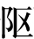

卷一百一十七 司马相如列传第五十七
司马相如者，蜀郡成都人也，字长卿。少时好读书，学击剑，故其亲名之曰犬子。相如既学，慕蔺相如之为人，更名相如。以赀为郎【以赀为郎：缴纳一定的财物而获得郎官的职位。赀，同“资”。】，事孝景帝，为武骑常侍，非其好也。会景帝不好辞赋，是时梁孝王来朝，从游说之士齐人邹阳、淮阴枚乘、吴庄忌夫子之徒，相如见而说之，因病免，客游梁。梁孝王令与诸生同舍，相如得与诸生游士居数岁，乃着《子虚之赋》。
会梁孝王卒，相如归，而家贫，无以自业。素与临邛令王吉相善，吉曰：“长卿久宦游不遂【遂：达，此处指仕途显贵。】，而【而：通“尔”，你。】来过我。”于是相如往，舍都亭。临邛令缪为恭敬，日往朝相如。相如初尚见之，后称病，使从者谢吉，吉愈益谨肃。临邛中多富人，而卓王孙家僮【僮：奴仆。】八百人，程郑亦数百人，二人乃相谓曰：“令有贵客，为具【为具：备办酒席。】召之。”并召令。令既至，卓氏客以百数。至日中，谒【谒：请。】司马长卿，长卿谢病【谢病：以病推辞。】不能往，临邛令不敢尝食，自往迎相如。相如不得已，强【强：勉强。】往，一坐尽倾【一坐尽倾：在座的客人都惊羡司马相如的风采。】。酒酣，临邛令前奏琴曰：“窃闻长卿好之，愿以自娱。”相如辞谢，为鼓一再行【鼓：弹奏。一再行：一两支曲子。再，第二。行，指乐曲。】。是时卓王孙有女文君新寡，好音，故相如缪【缪：通“谬”，佯装。】与令相重，而以琴心挑之。相如之临邛，从车骑，雍容闲雅甚都；及饮卓氏，弄琴，文君窃从户窥之，心悦而好之，恐不得当也。既罢，相如乃使人重赐文君侍者通殷勤。文君夜亡奔相如，相如乃与驰归成都。家居徒四壁立。卓王孙大怒曰：“女至不材，我不忍杀，不分一钱也。”人或谓王孙，王孙终不听。文君久之不乐，曰：“长卿第俱如临邛，从昆弟假贷犹足为生，何至自苦如此！”相如与俱之临邛，尽卖其车骑，买一酒舍酤酒，而令文君当炉。相如身自着犊鼻裈【犊鼻裈：形似牛犊之鼻的围裙，或说是形如牛犊之鼻的短裤。】，与保庸【保庸：雇工。】杂作，涤器于市中。卓王孙闻而耻之，为杜门不出。昆弟诸公更谓王孙曰：“有一男两女，所不足者非财也。今文君已失身于司马长卿，长卿故倦游，虽贫，其人材足依也，且又令客，独奈何相辱如此！”卓王孙不得已，分予文君僮百人，钱百万，及其嫁时衣被财物。文君乃与相如归成都，买田宅，为富人。
司马相如，是蜀郡成都人，字长卿。他年轻的时候喜欢读书，学习击剑技术，因此他的父母给他取个小名叫犬子。司马相如学成之后，景仰蔺相如的为人，就改名叫相如。他通过出钱而担任郎官，侍奉孝景帝，担任过武骑常侍，这不是他的兴趣所在。而且景帝也不喜欢诗辞歌赋，这个时候梁孝王进京朝见天子，跟他一同前来的游说之士有齐国人邹阳、淮阴人枚乘、吴国人庄忌等先生，司马相如见到这些人后心中向往他们的生活，就以生病为由辞官，旅居梁国。梁孝王让他与众儒生住在一起，司马相如得以与众儒生、游说之士相处了好几年，于是创作了《子虚赋》。
王世贞：“《子虚》《上林》，材极富，辞极丽，而运笔极古雅，精神极流动，意极高，所以不可及也。长沙有其意而无其材，班张潘有其材而无其笔，子云有其笔而不得其精神流动处。”鲁迅：“武帝时文人，赋莫若司马相如，文莫若司马迁。”
不久后梁孝王去世，司马相如便回到家中，但是家里太穷，他又没有赖以谋生的手艺。他平时与临邛县令王吉关系友善，王吉说：“长卿长时间在外谋求官职不可得，你可以来探望我。”于是司马相如前去拜访，住在都亭。临邛县令装作恭敬的样子，每天都去拜访司马相如。司马相如最初尚且能够以礼相见，后来就推托自己有病在身，派随从谢绝王吉，王吉的态度反而更加谨慎庄重了。临邛县里有很多富有的人，卓王孙拥有家奴八百人，程郑也拥有几百人，两人于是彼此商议说：“听说县令有尊贵的客人，我们就准备酒食招待他。”他们也邀请了县令。县令到来的时候，卓家的客人已经有几百人了。到了中午，便去请司马相如，司马相如也自己有病在身为由推托不去，临邛县令便不敢尝一口饭菜，亲自前去邀请司马相如。司马相如没有办法，勉强前往，满座的宾客都被他的风度所倾倒。饮酒正酣的时候，临邛县令亲自送上古琴说：“我私下里听说长卿喜好弹琴，希望聆听一曲，以祝酒兴。”司马相如推辞一番，但是还是弹奏了一两首曲子。当时卓王孙有个女儿叫文君刚刚守寡，喜好音律，因此司马相如装作和县令交情很深，却暗中用琴声来挑拨卓文君的芳心。司马相如刚到临邛的时候，有侍从车马跟从他，风度翩翩、举止大方；等到他在卓家赴宴的时候，抚弄古琴，卓文君就从门缝里偷看他，心中十分高兴并对司马相如一见倾心，只是担心无法见面。宴会结束后，司马相如于是派人以丰厚的礼物买通卓文君的侍从来转达自己的倾慕之意。卓文君连夜逃出家门与司马相如私奔，司马相如于是与她乘车赶回成都。到家一看，家里穷得只剩四面墙壁立在那里。卓王孙非常生气地说：“女儿实在太不成器，我虽不忍心杀她，但是也不会分给她一点家产。”有人劝说卓王孙，但卓王孙始终没有听从。卓文君一直闷闷不乐，于是说：“长卿，只要我们回到临邛，就算向兄弟们借钱也还足以维持生计，为什么要让自己穷苦到这个地步呢！”于是司马相如就跟她一同返回临邛，卖掉了所有的车马，买了一间酒铺来卖酒，卓文君亲自照看生意。司马相如自己穿上犊鼻裈，和酒保、杂役一起工作，在集市上洗涤酒器。卓王孙听说此事后感到十分羞耻，于是闭门不出。他的兄弟和当地名士纷纷前来劝说卓王孙道：“你有一个儿子两个女儿，所缺少的不是钱财。现在文君已经成为司马相如的妻子，而且司马相如早就厌倦外出求官，他虽然很穷，但是他的才能足够作为凭依。何况他还是县令的宾客，为什么偏偏这样看不起他呢！”卓王孙不得已，只好分给卓文君家奴一百人，钱一百万，以及她出嫁时的衣服被褥等各种财物。卓文君于是和司马相如回到成都，购置了农田和住屋，成了富有的人。
居久之，蜀人杨得意为狗监【狗监：官名。负责皇室的猎犬。】，侍上。上读《子虚赋》而善之，曰：“朕独不得与此人同时哉！”得意曰：“臣邑人司马相如自言为此赋。”上惊，乃召问相如。相如曰：“有是。然此乃诸侯之事，未足观也。请为天子游猎赋，赋成奏之。”上许，令尚书给笔札。相如以“子虚”，虚言也【“子虚”，虚言也：“子虚”，是个虚构的人物。】，为楚称；“乌有先生”者，乌有此事也，为齐难；“无是公”者，无是人也，明天子之义。故空借此三人为辞，以推天子诸侯之苑囿【苑囿：饲养动物的圈地。】。其卒章归之于节俭，因以风谏。奏之天子，天子大说。其辞曰：
楚使子虚使于齐，齐王悉发境内之士，备车骑之众，与使者出田【出田：打猎。田，同“畋”。】。田罢，子虚过诧【诧：吹嘘，夸耀。】乌有先生，而无是公在焉。坐定，乌有先生问曰：“今日田乐乎？”子虚曰：“乐。”“获多乎？”曰：“少。”“然则何乐？”曰：“仆乐齐王之欲夸仆【仆：谦辞，我。】以车骑之众，而仆对以云梦之事也。”曰：“可得闻乎？”
子虚曰：“可。王驾车千乘，选徒万骑，田于海滨。列卒满泽，罘网【罘网：围捕野兽的网。】弥山，揜【揜：抓，捕。】兔辚【辚：原意为车轮，这里指追逐，碾压。】鹿，射麋脚【脚：拖住脚。】麟。鹜于盐浦，割鲜染轮。射中获多，矜而自功。顾谓仆曰：‘楚亦有平原广泽游猎之地饶乐若此者乎？楚王之猎何与寡人？’仆下车对曰：‘臣，楚国之鄙人也，幸得宿卫十有余年，时从出游，游于后园，览于有无，然犹未能遍睹也，又恶足以言其外泽者乎！’齐王曰：‘虽然，略以子之所闻见而言之。’”
过了很久，蜀郡人杨得意在宫中担任主管御用猎狗的官员，侍奉皇上。当时皇上读到《子虚赋》并极为赞赏，说：“遗憾我没能跟这个人生活在同时代！”杨得意说：“我的同乡司马相如自称写了这篇赋。”皇上十分惊喜，于是召见司马相如。司马相如说：“是写过这篇文章。然而这是写诸侯游猎的事，不值得看。请让我写关于天子巡游狩猎的赋，完成之后就把它呈上。”皇上同意了，命令尚书提供文房四宝。司马相如就用“子虚”这个虚构的言辞，来称道楚国的美；“乌有先生”，就是没有这回事，来为齐国诘难楚国；“无是公”，就是没有这个人，来阐明做天子的道理。所以凭空借助这三个人写文章，来铺叙供天子和诸侯游乐的园林。文章最后归结到节俭这一主旨，借此来委婉地规劝君主。他把赋进献给天子，天子非常高兴。文辞是这样说的：
楚国派子虚出使齐国，齐王调集国内的全部士兵，准备了很多车马，与使者出外狩猎。狩猎结束后，子虚去拜访乌有先生并向他夸耀此事，当时无是公也在那里。他们坐下后，乌有先生问子虚：“今天狩猎开心吗？”子虚说：“高兴。”乌有先生又问：“猎物多吗？”子虚说：“不多。”乌有先生问：“既然这样，为什么会开心呢？”子虚说：“我开心是因为齐王打算向我夸耀他的车马众多，反倒被我炫耀一番楚王在云梦泽打猎的盛况呢。”乌有先生问：“可以说出来听听吗？”
子虚说：“可以。齐王率领一千辆马车，精选了一万名骑兵，在海边狩猎。列队的士兵布满了草泽，捕兽的罗网遍布山野，罗网罩住兔子，车轮碾死野鹿，箭矢射中麋鹿，倒提起麟的腿。车骑在海边的盐滩驰骋，分割猎物时流出的鲜血染红了车轮。因为射中并捕获的猎物很多，于是齐王便骄傲地夸耀自己的本事。他回头对我说：‘楚国也有这么平坦的原野和广阔的湖泽等供人游玩打猎的地方吗？楚王的狩猎场面和我相比又如何呢？’我下车回答说：‘我是楚国见识少的郊野之人，有幸得以在宫廷里做宿卫十多年，常常跟随楚王外出巡游，捕猎的场所就在王宫的后苑，顺便观赏四周的景物，但是还是没能全都看遍，又怎么能够谈论宫廷以外的湖泽呢！’齐王说：‘尽管如此，还是请你大致描述一下你的所见所闻吧。’
“仆对曰：‘唯唯。臣闻楚有七泽，尝见其一，未睹其余也。臣之所见，盖特其小小者耳，名曰云梦。云梦者，方九百里，其中有山焉。其山则盘纡【盘纡：盘回曲折。】岪郁【岪郁：曲折不通。】，隆崇嵂崒【山峰高高耸起。】；岑岩参差，日月蔽亏【蔽亏：遮挡，遮蔽。】；交错纠纷，上干青云；罢池陂陁【罢池陂陁：山势倾斜而下。】，下属江河。其土则丹青赭垩【赭垩：红褐色和白色。】，雌黄【雌黄：黄色的矿物颜料。】白附【白附：石灰。】，锡碧金银，众色炫耀，照烂龙鳞。其石则赤玉玫瑰【玫瑰：一种紫色的玉石。】，琳珉琨珸【琳珉琨珸：泛指美玉。】，瑊玏【瑊玏：比玉次一等的玉石。】玄厉，瑌石武夫【瑌石武夫：泛指比玉次一等的玉石。】。其东则有蕙圃衡兰，芷若射干【芷若射干：香草名。白芷、杜若、射干。】，穹穷昌蒲，江离麋芜【江离麋芜：水生的香草。】，诸蔗【诸蔗：甘蔗。】猼且【猼且：芭蕉。】。其南则有平原广泽，登降陁靡【登降陁靡：地势广阔且高低不平。】，案衍坛曼，缘以大江，限以巫山。其高燥则生葴苞荔，薛莎青薠。其卑湿则生藏莨蒹葭，东蔷雕胡【雕胡：茭白。】，莲藕菰芦【菰芦：葫芦。】，庵轩芋，众物居之，不可胜图。其西则有涌泉清池，激水推移；外发芙蓉蓤华，内隐巨石白沙。其中则有神龟蛟鼍，玳瑁鳖鼋。其北则有阴林巨树，楩楠豫章，桂椒木兰，蘖离朱杨，楂梸梬栗【楂梸梬栗：四种树名。】，橘柚芬芳。其上则有赤猿蠼蝚【赤猿蠼蝚：两种猿类。】，鹓雏【鹓雏：鸾凤一类的鸟。】孔鸾，腾远射干。其下则有白虎玄豹，蟃蜒貙豻，兕象野犀，穷奇獌狿。
“我回答说：‘遵命。我听说楚国有七个湖泽，曾经见过其中一个，没见过其余的。我所见到的这个，只是其中最小的一个，名叫云梦。云梦泽，方圆九百里，湖泽中有一座山。山势迂回曲折，高耸险峻；层峦叠嶂，蔽遮日月；山峰错落交杂，直入云霄；绵亘广阔，向下连接江河。那里的土壤里有朱砂、石青、红土、白垩，有雌黄、石灰，有锡矿、碧玉、黄金、白银，各种颜色闪耀炫目，好像有龙鳞间杂其中。那里的石头有赤玉、玫瑰、琳珉、琨珸，有瑊玏、黑石砺石，有瑌石、武夫石。东方有蕙圃、杜衡、兰草，有白芷、杜若、射干，有芎穷、菖蒲，有江蓠、麋芜，有甘蔗、芭蕉。南方有平坦的原野、广阔的湖泽，地势起伏不定，倾斜连绵，低洼与平坦交错，以长江为边际，以巫山为界限。地势高且干燥的地方生长有马蓝、草、苞茅、荔草，有艾蒿、莎草、青薠。地势低洼且潮湿的地方生长有莨草、芦苇，有东蔷、茭白，有莲藕、葫芦，有蒿草、莸草，各种植物在那里生长，无法全部描绘出来。西方有奔涌的泉水、清澈的池塘，水流激荡，奔流不息；水面上生长着荷花、菱花，水面下隐藏着巨石、白沙。湖泽里有神龟、蛟龙、鳄鱼，有玳瑁、龟鳖。北方有茂密的丛林，有巨树、楩树、楠树、樟树，有桂树、椒树、木兰，有黄蘖树、山梨树、赤茎柳，有山楂树、黑枣树，有散发香气的橘树、柚树。树上则有红猿、猕猴、凤凰、孔雀，有腾猿、狐猴。树下则有白虎、黑豹，有野狼、狐狸，有犀牛、大象，有飞虎、巨狼。
“‘于是乃使专诸【专诸：春秋时期著名的刺客。】之伦，手格此兽。楚王乃驾驯驳之驷，乘雕玉之舆，靡鱼须之桡旃【桡旃：曲柄的旗子。】，曳明月之珠旗，建干将【干将：古代的宝剑名。】之雄戟，左乌嗥【乌嗥：古代的良弓名。】之雕弓，右夏服【夏服：后羿用过的箭袋。】之劲箭；阳子骖乘，纤阿为御；案节未舒，即陵狡兽，辚邛邛【邛邛：一种与马很像的青色的野兽。】，蹴距虚【距虚：一种类似骡却比骡小的兽。】，轶野马而騊駼【騊駼：生长在北方的良种野马。】，乘遗风【遗风：千里马名。】而射游骐；倏眒凄浰【倏眒凄浰：形容车马的迅速。】，雷动熛至，星流霆击，弓不虚发，中必决眦，洞胸达腋，绝乎心系，获若雨兽，掩草蔽地。于是楚王乃弭节裴回，翱翔容与，览乎阴林，观壮士之暴怒，与勐兽之恐惧，徼受诎，殚睹众物之变态。
“‘于是郑女【郑女：指代美女。】曼姬，被阿锡，揄纻缟，杂纤罗，垂雾縠；襞积【襞积：衣褶。】褰绉，纡徐委曲，郁桡谿谷；衯衯裶裶【衯衯裶裶：形容衣袖宽大美好。】，扬袘恤削【恤削：裁剪整齐。】，蜚纤垂髾【垂髾：古代女性衣服上形状像燕尾的装饰。】；扶舆猗靡，噏呷萃蔡，下摩兰蕙，上拂羽盖，错【错：交错，杂错。】翡翠之威蕤，缪绕【缪绕：环绕，缠绕。】玉绥；缥乎忽忽，若神仙之仿佛。
“于是就派专诸那样的勇士，徒手与这些勐兽搏杀。楚王于是驾驭着驯顺的杂色马，乘坐雕玉装饰的车，挥舞着用鱼须制成的曲柄旗帜，摇动着装饰明月珍珠的旗帜，高举着干将铸造的大戟，左手持雕饰着花纹的乌嗥之弓，右手持后羿囊中的强劲之箭。阳陵子在右侧陪乘，纤阿负责驾车。马车缓缓前行尚未尽情賓士，就足以超越强健的野兽，越过了邛邛，踏过了距虚，超过了野马，踩过了騊駼，驾乘千里马遗风，挽起雕弓射猎天马；动作敏捷，如同霹雳狂风，如同流星雷霆。箭无虚发，箭箭射裂野兽的眼眶，箭簇穿透猎物的胸膛直达腋下，射穿心脏与血管的连接。捕获的猎物多如雨下，覆盖了草原，遮蔽了大地。于是楚王停鞭徐行，逍遥自在，在丛林中游览，欣赏壮士的凶狠威武，勐兽的恐惧战抖，等候野兽的疲惫，将其拦截、捕捉，尽情欣赏万物变化的情态。
“于是郑国的美女，身穿轻细丝绸制成的衣裳，拖曳麻布和白绢制成的裙子，夹杂飘逸艳丽的罗绮，身后垂挂好似薄雾的轻纱；衣褶重叠而纹理细密，裙摆下垂而线条婉曲，好似深幽的溪谷；长衣飘动，长裙飘扬，衣带飞舞，好似燕尾；盘旋婀娜，衣裙摆动，沙沙作响，向下摩擦兰花蕙草，向上拂拭羽饰车盖，头上交错装饰有翡翠色的羽毛，颌下缠绕着用美玉装饰的冠带；若隐若现，飘忽不定，好似神仙一样虚无缥缈。
“‘于是乃相与獠于蕙圃【獠于蕙圃：指狩猎。】，媻珊勃窣上金堤【金堤：坚固的堤坝。】，揜翡翠，射鵔鸃，微矰【微矰：用来射鸟的箭。】出，纤缴施，弋白鹄，连驾鹅，双鸧下，玄鹤加。怠而后发，游于清池；浮文鹢【浮文鹢：乘坐船身上有彩色水鸟图案的船。】，扬桂枻【桂枻：桂木做成的船桨。】，张翠帷，建羽盖，罔玳瑁，钓紫贝；摐金鼓，吹鸣籁，榜人【榜人：船夫。】歌，声流喝，水虫骇，波鸿沸，涌泉起，奔扬会，礌石。相击，硠硠礚礚【硠硠礚礚：石块相撞的声音。】，若雷霆之声，闻乎数百里之外。
“‘将息獠【息獠：停止狩猎。】者，击灵鼓，起烽燧【烽燧：本意指警示敌人来犯的烽火，这里指火把。】，车案行，骑就队，纚乎淫淫，班乎裔裔。于是楚王乃登阳云之台，泊乎无为，澹乎自持，勺药之和具而后御之。不若大王终日驰骋而不下舆，脟割【脟割：将肉切成碎块。】轮淬，自以为娱。臣窃观之，齐殆不如。’于是王默然无以应仆也。”
“于是楚王就与众人共同前往蕙圃打猎，缓缓在丛林中前行，走上黄金之堤，用网捉翠鸟，用箭射锦鸡，发射带丝线的箭，射中天鹅，牵住野鹅，鸧鸹坠地，黑鹤中箭。疲倦后登船，在清澈的池塘中泛舟，乘坐绘有鹢鸟图案的船，扬起桂木制成的浆，张起碧绿的幔帐，树起饰有羽毛的伞盖，用渔网捕捞玳瑁，用钓线捉取紫贝；敲击金鼓，吹奏排萧，船夫高歌，声音悲戚，水虫惊骇，洪波沸腾，泉水涌起，奔流汇聚，波浪与礁石相互撞击，发出硠硠礚礚的声响，好似雷霆怒吼，在几百里以外都能听见。
“将要停止打猎，敲击灵鼓，点燃火把，马车依次行进，骑士归入队列，如丝织般相连渐进，如流水般秩序井然。于是楚王登上阳云之台，心境宁静平和，恬淡自若，用芍药等香料调和食物后品尝。不像大王终日驰骋而不下车舆，把肉切割成小块，坐在车轮旁边烧烤，自以为很有趣。我私下里观察，齐国大概比不上楚国。’于是齐王沉默不语，没有说一句话了。”
乌有先生曰：“是何言之过也！足下不远千里，来况【来况：谦词，相当于现代的“光临”。】齐国，王悉发境内之士，而备车骑之众，以出田，乃欲戮力致获，以娱左右也，何名为夸哉！问楚地之有无者，愿闻大国之风烈，先生之余论也。今足下不称楚王之德厚，而盛推云梦以为高，奢言淫乐而显侈靡，窃为足下不取也。必若所言，固非楚国之美也。有而言之，是章君之恶；无而言之，是害足下之信。章君之恶而伤私义，二者无一可，而先生行之，必且轻【轻：被轻视。】于齐而累【累：加罪。】于楚矣。且齐东陼巨海，南有琅邪，观【观：观赏游览。】乎成山，射乎之罘【之罘：山名。位于今山东省荣成县附近。】，浮勃澥【勃澥：渤海。】，游孟诸，邪【邪：通“斜”，旁，侧。】与肃慎【肃慎：古国名，今黑龙江省和吉林省北部地区。】为邻，右【右：应为“左”，指的是齐国东侧。】以汤谷为界，秋田乎青丘，傍偟乎海外，吞若云梦者八九，其于胸中曾不蒂芥【蒂芥：也作“芥蒂”，指让人心中不愉快的小间隙。】。若乃俶傥瑰伟，异方殊类，珍怪鸟兽，万端鳞萃【鳞萃：汇聚众多。】，充仞其中者，不可胜记，禹不能名，契不能计。然在诸侯之位，不敢言游戏之乐，苑囿之大；先生又见客，是以王辞而不复，何为无用应哉！”
无是公听然【听然：微笑的样子。】而笑曰：“楚则失矣，齐亦未为得也。夫使诸侯纳贡者，非为财币，所以述职也；封疆画界者，非为守御，所以禁淫也。今齐列为东藩，而外私肃慎，捐国逾限【限：国境，国界。】，越海而田，其于义故未可也。且二君之论，不务明君臣之义而正诸侯之礼，徒事争游猎之乐，苑囿之大，欲以奢侈相胜，荒淫相越，此不可以扬名发誉，而适足以贬君自损也。且夫齐楚之事又焉足道邪！君未睹夫巨丽也，独不闻天子之上林乎？
乌有先生说：“这话说得有些过了！您不远千里前来访问齐国，齐王调集国内全部士兵，准备众多车马，来陪同您出游狩猎，是想要和您一起努力捕获猎物，来使使者感到愉快，为什么将其说成是夸耀呢！询问楚国的物产有无，是希望听一听大国的教化功业，还有先生的广博言论。现在您不称道楚王的德行宽厚，却大力推崇云梦泽来阐发高论，大谈放纵逸乐来彰显奢侈靡费，我私下里认为您的做法不值得提倡。真的如您所说，就根本不是楚国的优点。有这样的事并且说出来，是彰显君主的恶行；没有这样的事却说出来，就会损害您的信誉。彰显君主的恶行和损害自己的信誉，两件事无一可取，然而先生却做了，一定将会遭到齐国轻视并且使楚国受到连累。况且齐国东临大海，南有琅琊山，在成山观赏美景，在之罘山围捕狩猎，在渤海泛舟漂流，在孟诸泽出行游乐，偏远之处与肃慎相接，右侧以汤谷为界限，秋天在青丘狩猎，在海外自由漂荡，就算容纳八九个云梦泽，也丝毫不觉得阻塞。至于那些不同寻常的物产，各地的特产，珍奇的鸟兽，也都像鱼鳞一样聚集起来并充塞其中，不可胜数，连夏禹也叫不上名字，连商契也算不清数目。然而齐王身处诸侯的地位，不敢谈论游玩的快乐，园林的广大；先生又被视为贵客，所以齐王辞让而不答复，怎么说是无言以对呢！”
无是公听后笑着说：“楚国的确做错了，齐国做得也不能算对。天子让诸侯交纳贡品，不是为了获取钱财和礼物，而是为了让他们陈述职守；创建封国划分疆界，不是为了守卫防御，而是为了禁止诸侯的越轨行为。现在齐国作为天子东方的屏藩，却和外族肃慎私下往来，抛弃封国超越边界，越过大海去打猎，从本分上说是不合适的，况且你们二人的议论，并非明确君臣之间的道义，也不是并端正诸侯的礼仪，只是一味地争辩游乐狩猎的快乐，园林的广大，想要在奢侈方面来战胜对方，在荒淫方面来一决高下，这样做非但不能使自己名声远播，而且还能贬低君主的声望并损害自己的信誉。况且齐、楚两国狩猎之事又哪里值得一提呢！你们怕是还没有见过更壮丽的场面，难道没有听说过天子的上林苑吗？
“左苍梧，右西极，丹水更【更：流经。】其南，紫渊径【径：直接穿过。】其北；终始霸浐，出入泾渭；酆鄗潦潏，纡余委蛇【纡余委蛇：形容河水弯曲的样子。】，经营乎其内。荡荡兮八川分流，相背而异态。东西南北，驰骛往来，出乎椒丘之阙，行乎洲淤之浦，径乎桂林之中，过乎泱莽之野。汩【汩：水流动的样子。】乎浑流，顺阿【阿：高丘。】而下，赴隘陕之口。触穹石，激堆埼，沸乎暴怒，汹涌滂【滂：象声词，同“澎湃”，指水撞击时发出的声音。】，滭浡滵汩【滭浡滵汩：形容水流湍急且澎湃。】，湢测泌瀄【湢测泌瀄：形容水流急迫且波涛汹涌。】，横流逆折，转腾潎洌【转腾潎洌：形容波涛汹涌。】，澎濞沆瀣【澎濞沆瀣：形容波涛拍岸的巨大声响。】，穹隆云挠【形容水势高低起伏。】，蜿蟺胶戾【蜿蟺胶戾：形容水流蜿蜒曲折。】，逾波趋浥【浥：低洼处。】，莅莅下濑【莅莅下濑：水流冲击沙石的声音。】，批壧冲壅，奔扬滞沛【奔扬滞沛：波涛汹涌，水花四溅。】，临坻注壑，瀺灂霣坠，湛湛隐隐，砰磅訇 【砰磅訇：水流激荡发出巨大的声响。】，潏潏淈淈，湁潗鼎沸，驰波跳沫【驰波跳沫：水流速度很快，水花四溅。】，汩漂疾，悠远长怀，寂漻无声，肆乎永归。然后灏溔潢漾【灏溔潢漾：水面宽广，浩瀚无垠。】，安翔徐徊，翯【翯：水面波光粼粼。】乎滈滈，东注大湖，衍溢陂池。于是乎蛟龙赤螭，离，鰅鳙鰬魠，禺禺鱋【鱋：比目鱼。】魶【魶：娃娃鱼。】，揵鳍擢尾，振鳞奋翼，潜处于深岩；鱼鳖欢声，万物众伙，明月珠子，玓瓅【玓瓅：光亮鲜明的样子。】江靡，蜀石黄碝，水玉磊砢，磷磷烂烂，采色澔旰【澔旰：美玉流光溢彩的样子。】，丛积乎其中。鸿鹄鹔鸨，鴐鹅鸀鳿，䴔鹮目，烦鹜鷛，鴜䴔鸬，群浮乎其上。汎淫泛滥，随风澹淡，与波摇荡，掩薄【薄：聚集。】草渚，唼喋【唼喋：水鸟和鱼吃食物的声音。】菁藻，咀嚼菱藕。
【砰磅訇：水流激荡发出巨大的声响。】，潏潏淈淈，湁潗鼎沸，驰波跳沫【驰波跳沫：水流速度很快，水花四溅。】，汩漂疾，悠远长怀，寂漻无声，肆乎永归。然后灏溔潢漾【灏溔潢漾：水面宽广，浩瀚无垠。】，安翔徐徊，翯【翯：水面波光粼粼。】乎滈滈，东注大湖，衍溢陂池。于是乎蛟龙赤螭，离，鰅鳙鰬魠，禺禺鱋【鱋：比目鱼。】魶【魶：娃娃鱼。】，揵鳍擢尾，振鳞奋翼，潜处于深岩；鱼鳖欢声，万物众伙，明月珠子，玓瓅【玓瓅：光亮鲜明的样子。】江靡，蜀石黄碝，水玉磊砢，磷磷烂烂，采色澔旰【澔旰：美玉流光溢彩的样子。】，丛积乎其中。鸿鹄鹔鸨，鴐鹅鸀鳿，䴔鹮目，烦鹜鷛，鴜䴔鸬，群浮乎其上。汎淫泛滥，随风澹淡，与波摇荡，掩薄【薄：聚集。】草渚，唼喋【唼喋：水鸟和鱼吃食物的声音。】菁藻，咀嚼菱藕。
“东方抵达苍梧，西方到达西极，丹水流经它的南边，紫渊流过它的北边；霸水、浐水始终在园林中流淌，泾水、渭水流出又流进；酆水、鄗水、潦水、潏水，曲折盘旋，在其中循环往复，八条河流浩浩荡荡，走向相背并且形态不同，东西南北，奔流往来，从椒丘的山口流出，在沙洲的水边流淌，于桂树林中贯穿，从茫茫的原野上流过。激荡的水流，顺着丘陵而下，奔赴到狭窄的山口。撞击巨石，冲击沙滩，水流沸腾好似暴怒，汹涌澎湃，水势盛大流速迅疾，波涛相互撞击，横向流动回旋，转折奔腾后水流趋向清彻，水势高涨，像云一样卷曲，宛转盘旋，后浪追击着前浪注入低洼之处，哗哗作响，经过水底的沙石，拍打岩石冲击沟谷，奔腾飞扬不可抵挡，冲刷沙洲注入山谷，水势趋向平缓，水声逐渐细弱，水流坠落至沟谷深潭之中，水深流急，发出轰鸣的巨响，汹涌激扬，清泉如同鼎水沸腾，波涛奔腾，水花跳跃，水流急转，水波迅疾，悠远长流，寂静无声，安宁之后永归湖海。水域广大且无边无际，安然流淌缓慢掉头，水势浩大且波光粼粼，向东注入大湖，溢出后流进旁边的小池。于是，蛟龙、赤螭、鲔鱼、螹离、螹离、鰅鱼、鳙鱼、鰬鱼、魠鱼、禺禺鱼、比目鱼、娃娃鱼，都竖起背鳍摇动尾巴，振抖鱼鳞张开鱼翅，潜伏在深渊岩石之中。鱼鳖发出欢快的声音，成群结队数量众多，月明珠和珍珠，在江边闪耀，蜀山之石、黄色碝石、层层堆积的水晶石，灿烂耀眼，交相辉映，聚集在水中。大雁、天鹅、鹔鸟、鸨鸟、鴐鹅、鸀鳿、、鹮目、烦鹜、鷛、鴜、鸬鹚，成群地浮在水面上。随波逐流，随风漂荡，沙洲之上水草丛生，鸟兽鱼鳖争着吃菁、藻等水草，咀嚼着菱角、莲藕。
“于是乎崇山巃嵸，崔巍嵯峨，深林巨木，崭岩嵾嵯，九嵏【九嵏：山名，位于今陕西省礼泉县附近。】、嶻【嶻：山名，位于今陕西省三原县附近。】，南山【南山：终南山，位于今陕西省西安市南。】峨峨，岩陁【岩陁：高峻倾斜。】甗锜【甗锜：形容山势倾斜如同甗一样。】，嶊崣【嶊崣：同“崔嵬”，山势高峻。】崛崎【崛崎：山势陡峭。】，振溪通谷，蹇产【蹇产：弯弯曲曲的样子。】沟渎，谽呀豁閜，陵别岛，崴崴嵬瘣，丘虚崛，隐辚郁，登降施靡，陂池貏豸【貏豸：山势渐渐趋于平缓。】，沇溶淫鬻【沇溶淫鬻：水缓缓流淌。】，散涣夷陆【夷陆：平坦的地面。】，亭皋千里，靡不被筑。掩以绿蕙，被以江离，糅【糅：杂糅，混杂。】以蘼芜，杂以流夷。尃结缕，櫕戾莎，揭车衡兰，稿本射干，茈姜蘘荷，葴橙若荪，鲜枝黄砾，蒋芧青薠，布濩【布濩：遍及，遍布。】闳泽，延曼太原，丽靡【丽靡：连绵不绝。】广衍，应风披靡，吐芳扬烈，郁郁斐斐，众香发越，肸蚃【肸蚃：香气。】布写，晻暧芯勃【晻暧芯勃：形容香气浓郁。】。
“于是乎，高山耸立，山势巍峨，林深树大，峰峦险峻而起伏。九嵏山、嶻嶭山、终南山高峻，山形倾斜，崔巍崎岖。溪流经过山谷，曲折地汇入沟渠，山谷空旷广大，丘陵周围分布着一些小山，高峻险绝，错落重叠，地势起伏而绵延不绝，到了低洼处的池塘附近渐趋平坦，水流缓慢，向四处漫溢，无边无际的滩涂，无不平缓宽阔。岸边覆盖着绿色的蕙草，铺满了江蓠，中间散布着芎穷的幼苗，夹杂着流夷草，布满结缕草，还生长着深绿色的莎草。揭车草、杜衡草、兰草、稿本草、射干草、新姜、阳藿、酸浆草、灯笼草、杜若草、荪草、鲜枝、黄砾、孤蒲草、三棱草、青薠，遍布于广大的沼泽，蔓延于宽阔的原野，连绵不绝并广泛伸展，随风摇曳倾倒，散发馥郁的芬芳，香气扑鼻，沁入人心，芳馨四溢。
“于是乎周览泛观，瞋盼轧沕，芒芒恍忽【芒芒恍忽：眼花缭乱。】，视之无端，察之无崖。日出东沼，入于西陂。其南则隆冬生长，踊水躣波【踊水躣波：波涛翻滚。】；兽则旄貘牦，沈牛【沈牛：水牛。】麈麋【麈麋：麋鹿。】，赤首圜题，穷奇【穷奇：传说中长相似虎却有翅膀的一种兽。】象犀。其北则盛夏含冻裂地，涉冰揭河；兽则麒麟角，騊駼橐驼【橐驼：骆驼。】，蛩蛩驒騱，駃騠驴骡。
“于是乎离宫别馆，弥山跨谷，高廊四注，重坐曲阁，华榱璧珰【璧珰：瓦当。】，辇道纚属，步櫩【步櫩：供人行走的游廊。】周流，长途中宿。夷嵏筑堂，累台【累台：重叠的亭台。】增成，岩穾洞房【洞房：类似洞穴的信道。】，俯杳眇而无见，仰攀橑【橑：木椽。】而扪天，奔星更于闺闼，宛虹拖楯轩【楯轩：窗户之外的栏杆。】。青虬蚴蟉于东箱【东箱：同“东厢”，东厢房。】，象舆婉蝉于西清【西清：正殿西侧的清净房间。】，灵圉【灵圉：仙人名。】燕于闲观，偓佺【偓佺：仙人名。】之伦暴于南荣，礼泉涌于清室，通川过乎中庭。盘石裖崖，嵚岩倚倾，嵯峨磼礏，刻削峥嵘，玫瑰碧琳，珊瑚丛生，珉玉旁唐【旁唐：巨大的样子。】，瑸斒【瑸斒：一种玉石。】文鳞，赤瑕驳荦，杂臿其间，垂绥【垂绥：一种玉石。】琬琰，和氏出焉。
“于是乎，环视四方广泛观察，瞪大眼睛也无法分辨，眼花缭乱而视觉恍惚，细看时宽广无端，详端时无边无际。太阳从东边的池沼中升起，从西边的山坡上落下。园林的南边在深冬时节也草木丛生，水波荡漾永不冻结；那里的野兽有牛、旄牛、貘、牦牛、水牛、驼鹿、麋鹿、赤首兽、圆蹄兽、巨狼、大象、犀牛。园林的北边在盛夏时节也滴水成冰，地面冻裂河水结冰；那里的野兽有麟麟、角、騊駼、骆驼、蛩蛩兽、驒騱、駃騠、驴子、骡子。
“于是乎，行宫别墅，遍布山坡横跨溪谷，高大的回廊四周相连，有重叠的楼房和曲折的阁道，有彩绘的椽子和璧玉的瓦当。帝王车辇的信道连接不绝，在回廊之间周游，路程遥远以致于在中途住宿。夷平高山来构筑殿堂，垒砌层层台榭，山岩底部有幽深的屋室与高台相通。俯视山下遥远之处而缥缈无所见，仰视天空登上屋顶可以触摸青天。流星划过宫廷的大门，弯曲的彩虹横跨栏杆与窗户之间。青色的虬龙蜿蜒在东厢房，大象拉的车行走在西厢房，神灵在清闲的馆舍安然休憩，仙人在南边的屋檐下沐浴阳光。甘甜的泉水从清静的屋室中涌出，贯通的河川流过庭院的中央，用坚固的巨石修整河岸，高耸险峻，巍峨参差，陡峭峥嵘，山岩好像人工刻削而成。园林中玫瑰琳琅满目，珊瑚丛聚而生。大气的奇石好似美玉，华丽的纹饰好似鱼鳞，带有红色斑点的玉石花纹交错，散布在其中。垂绶、琬琐、和氏等著名宝玉都在这里出现。
“于是乎卢橘夏孰【孰：同“熟”。】，黄甘橙楱，枇杷橪【橪：酸枣。】柿，楟【楟：海棠果。】柰厚朴，梬枣【梬枣：黑枣。】杨梅，樱桃蒲陶，隐夫郁棣，【：一种类似李子的水果。】荔枝，罗乎后宫，列乎北园。貤丘陵，下平原，扬翠叶，杌紫茎，发红华，秀【秀：开花。】朱荣，煌煌扈扈，照曜钜野。沙棠栎槠，华泛檘栌，留落【留落：石榴。】胥余【胥余：椰子。】，仁频【仁频：槟榔树。】并闾【并闾：棕榈树。】，欃檀【欃檀：檀树。】木兰，豫章女贞，长千仞，大连抱，夸条直畅，实叶葰茂，攒立丛倚，连卷累佹，崔错癹骫【癹骫：弯曲盘结的样子。】，坑衡閜砢，垂条扶于，落英幡纚【幡纚：盘旋飞舞的样子。】，纷容萧参，旖旎从风，浏莅芔吸，盖象金石之声，管籥之音。柴池茈虒，旋环后宫，杂沓累辑【杂沓累辑：繁多茂盛的样子。】，被山缘谷，循坂下隰，视之无端，究之无穷。
“于是乎，有夏季成熟的芦橘，还有黄柑、橙子、楱子、枇杷、酸枣、柿子、山梨、海棠、厚朴、梬枣、杨梅、樱桃、葡萄、樱桃、郁李、、荔枝，罗列在后宫和北园，遍布丘陵和平原，绿叶扬起，紫茎摆动，红花绽放，朱颜绽开，色彩鲜明，照耀着广阔的原野。沙棠树、栎树、槠树、桦树、枫树、银杏树、黄栌树、刘杙树、椰子树、槟榔树、棕榈树、檀树、木兰、樟树、冬青树，高达千仞，树大环抱，花朵和枝条舒展而挺拔，果实和叶片硕大而茂盛。树木聚集在一起簇拥相倚，枝条卷曲而交织重叠，繁茂交错，盘曲纠结，向外伸展并相依相扶。树枝伸向四方，落花漫天飞扬。枝条茂盛而修长，随风摇曳飘荡，发出淅沥的声响，好似钟磐之声，好似管箫之音。树木参差错落，环绕在后宫周围，重叠聚集，覆盖山野，沿溪谷生长，顺着山坡一直蔓延到低湿之处，放眼望去看不见起始，仔细端详望不到边际。
“于是玄猿素雌，蜼【蜼：长尾猴。】玃【玃：大猴子。】飞鸓【飞鸓：鼯鼠。】，蛭蜩蠗蝚，螹胡豰蛫，栖息乎其间；长啸哀鸣，翩幡互经【互经：猿猴在树上跳跃嬉戏。】，夭蟜枝格，偃蹇杪颠。于是乎隃绝梁，腾殊榛【榛：树木丛生的树林。】，捷垂条，踔稀间，牢落陆离【陆离：参差不齐。】，烂曼远迁。
“若此辈者，数千百处。嬉游往来，宫宿馆舍，庖厨不徙，后宫不移，百官备具。
“于是乎背秋涉冬，天子校猎【校猎：在围场四周设置栅栏，将野兽驱赶入栏。】。乘镂象，六玉虬，拖霓旌，靡云旗，前皮轩，后道游；孙叔奉辔【奉辔：驱车，赶车。】，卫公骖乘，扈从横行，出乎四校之中。鼓严簿【严簿：君主的仪仗队。】，纵獠者，江河为阹【阹：利用山谷等有利地形狩猎。】，泰山为橹，车骑类雷起，隐天动地，先后陆离，离散别追，淫淫裔裔，缘陵流泽，云布雨施。”
“于是乎，有黑色的雄猿、白色的雌猿、长尾猴、玃猴、飞鼠、蛭、蜩、猕猴、螹胡、豰、蛫，在园林中栖息；这些动物在树林间或长啸，或哀鸣，往来跳跃，在枝条间行动敏捷，悬挂在树梢之上。于是乎，这些猿猴越过断桥，跳到另一个技头上，抓住悬垂的枝条，跃到林木稀疏的空地上，奔走聚散，往来不绝。
“像这样的地方，园林中还有成百上千处，天子在其中往来游乐，有行宫别馆以供住宿。行宫中万事具备，既不需要从京城抽调厨师，也不需要将后宫的嫔妃侍女迁移到这里，甚至文武百官也都齐备。
“于是乎，秋去冬来，天子到这里狩猎，乘坐着用象牙镶嵌而成的马车，驾车的是六匹用玉饰装扮的马，霓虹制成的彩旗随风摇曳，彩云织就的旗子高高挥舞，前面有蒙着虎皮的车开道，后面有导车和游车跟随，孙叔负责驾车，卫公在车上陪乘，百官侍从护卫天子的车驾在队伍前面肆意穿过，往来于四周设有木栏的围场。鼓声响起，天子发号施令，让狩猎的勇士尽情賓士，用江河拦截禽兽，以泰山作为远观的望楼，车马賓士声响如同雷鸣，震天动地，勇士四下分散，分别追逐猎物，沿着山陵，顺着溪流，好似乌云密布苍穹，好似大雨倾盆降下。
“生【生：生擒。】貔豹，搏【搏：赤手空拳地搏击。】豺狼，手【手：空手捕捉。】熊罴，足【足：用脚去踢。】野羊，蒙鹖苏，绔白虎，被豳文，跨野马。陵【陵：攀登。】三嵏【三嵏：重重叠叠的山峰。】之危，下碛历【碛历：凹凸不平。】之坻；径陖赴险，越壑厉水。推蜚廉【蜚廉：鸟身鹿首的异兽。】，弄解豸【解豸：长相似鹿，却仅有一只角的异兽。】，格瑕蛤，铤勐氏，罥騕袅，射封豕。箭不苟害，解脰【脰：脖子。】陷脑；弓不虚发，应声而倒。于是乎乘舆弥节裴回，翱翔往来，睨部曲之进退，览将率之变态。然后浸潭促节，倏夐【倏夐：迅速离开的样子。】远去，流离轻禽，蹴履狡兽，白鹿，捷狡兔，轶赤电，遗光耀，追怪物，出宇宙，弯繁弱【繁弱：传说中的良弓。】，满白羽，射游枭，栎蜚虡【蜚虡：一种鹿首龙身的怪兽。】，择肉后发，先中命处，弦矢分，艺【艺：箭靶。】殪【殪：一箭毙命。】仆。
“然后扬节【节：马鞭。】而上浮，陵惊风【惊风：暴风。】，历骇飙【骇飙：暴风。】，乘虚无，与神俱，辚玄鹤，乱昆鸡。遒孔鸾，促鵔鸃，拂鹥鸟，捎凤皇，捷鸳雏，俺焦明。
“生擒貔、豹，搏杀豺、狼，制服熊罴，踏倒野羊。勇士们头戴饰有鹖尾的帽子，穿着绘有白虎图案的裤子，披着带有斑纹的衣服，骑着野马。他们登上高峻的山巅，走下坎坷的山坡，经过山陵，奔赴险峰，跨越深沟，渡过急流。他们列队猎获蜚廉，捕捉獬豸，搏杀虾蛤，刺死勐氏，用绳索捆绑健壮的骏马，用弓箭射杀巨大的野猪。箭不虚发，每次都能准确地射中野兽的头颈；矢一离弦，每次都会让野兽应声而倒。
“然后高高扬起马鞭使之在风中飘荡，迎着狂风，驾驭虚无之气，与神灵在一起，脚踩黑鹤，扰乱鹍鸡群，迫近孔雀、鸾凤、鵔鸃，轻拂鹥鸟，掠过凤凰，追赶鸳雏，罩住焦明。
“道尽涂殚，掉头而还。招摇【招摇：逍遥。】乎襄羊【襄羊：同“徜徉”。】，降集乎北纮【北纮：同“北维”，最北端。】，率乎直指，闇【闇：通“奄”，突然。】乎反乡。蹶石关，历封峦，过鳷鹊，望露寒，下棠梨，息宜春，西驰宣曲，濯鹢牛首，登龙台，掩细柳，观士大夫之勤略，钧獠者之所得获。徒【徒：步兵。】车之所辚轹，乘骑之所蹂若，人民之所蹈【蹈：抓获。】，与其穷极倦，惊惮慑伏，不被创刃而死者，佗佗籍籍，填坑满谷，掩平弥泽。
“于是乎游戏懈怠，置酒乎昊天【昊天：天空。】之台，张乐乎【：广阔深远的样子。】之宇；撞千石之钟，立万石之钜；建翠华之旗，树灵鼍之鼓。奏陶唐氏之舞，听葛天氏之歌，千人唱，万人和，山陵为之震动，川谷为之荡波。巴俞宋蔡，淮南于遮，文成颠歌，族举递奏，金鼓迭起，铿枪铛，洞心骇耳。荆吴郑卫之声，《韶》《濩》《武》《象》之乐，阴淫案衍之音，鄢【鄢：地名，今湖北省宜城。】郢【郢：地名，今湖北省江陵。】缤纷，《激楚》结风，俳优侏儒，狄鞮之倡，所以娱耳目而乐心意者，丽靡烂漫于前，靡曼美色于后。
“行至道路的尽头，掉转车头返回。逍遥而徜徉，然后从天而降，停留在北方，一往直前，傍晚时分才回京城。踏上石阙，经过封峦，路过鳷鹊，望见露寒，在棠梨宫中停驻，在宜春宫中休息，向西驰行至宣曲宫，在牛首池中乘坐画着鹢鸟图案的船，登上龙台观，在细柳观停息，观看将士们的辛勤努力，为勇士们分配捕获的猎物。凡是勇士和战车所踩踏碾压的，随从的坐骑所践踏蹂躏的，和那些因为疲惫至极、惊吓过度、未受创伤而死的猎物，杂乱交错，填塞沟壑与山谷，掩蔽平原与川泽。
“于是乎，开始游乐嬉戏以放松精神，在昊天之台上置办酒席，在之宇中陈设乐器；敲击千石的钟，竖起万石的钜，升起装饰有翠鸟羽毛的旗，立起鳄鱼皮制作的鼓。演奏陶唐氏的乐舞，倾听葛天氏的歌曲，千人领歌，万人附和，山陵因此而震动，川谷因此而激荡。巴俞之舞，宋蔡之音，淮南之乐，于遮之曲，文成县和颠县的民谣，各种乐器顺次演奏，钟鼓之声轮流响起，乐声洪亮，透心震耳。楚、吴、郑、卫等国的靡靡之音，舜的《韶》、汤的《濩》、周武王的《武》、周公的《象》等高雅之乐，淫靡无度的乐声，楚都鄢郢，舞姿飘逸，《激楚》之乐，舞姿激昂，杂耍艺人，西戎歌手，他们的表演使人耳目欢娱、心情愉快，前有美妙动听的淫靡乐曲，后有肌肤细腻的美貌女子。
“若夫青琴【青琴：古代神女名。】宓妃【宓妃：洛水女神。】之徒，绝殊离俗，姣冶娴都【姣冶娴都：形容女子美丽。】，靓庄【靓庄：打扮、装扮。庄，通“妆”。】刻饬，便嬛绰约【便嬛绰约：形容女性体态轻盈柔美。】，柔桡嬛嬛，妩媚姌袅【妩媚姌袅：形容女性姿态美好。】；曳独茧【独茧：形容衣服的颜色一致，好像是一个蚕茧抽出的丝做成的。】之褕袘【褕袘：罩在外面的单衣。】，眇阎易以戌削，媥姺徶【媥姺徶：衣服轻盈随风飘动。】，与世殊服；芬香沤郁【沤郁：香味浓郁。】，酷烈淑郁；皓齿粲烂，宜笑旳皪【旳皪：牙齿洁白。】；长眉连娟，微睇绵藐；色授魂与，心愉于侧。
“于是酒中乐酣，天子芒然而思，似若有亡。曰：‘嗟乎，此泰奢侈！朕以览听余，无事弃日，顺天道以杀伐，时休息于此，恐后世靡丽，遂往而不反，非所以为继嗣创业垂统也。’于是乃解酒罢猎，而命有司曰：‘地可以垦辟，悉为农郊，以赡萌隶【萌隶：平民。】；隤墙填堑，使山泽之民得至焉。实陂池而勿禁，虚宫观而勿仞。发仓廪以振贫穷，补不足，恤鳏寡，存孤独。出德号，省刑罚，改制度，易服色，更正朔，与天下为始。’
“像青琴和宓妃那样的女神，世上绝无仅有，容貌美丽举止高雅，粉黛修饰容颜精致，精心整饬鬓发，仪态姣好，轻盈飘逸，纤细柔美，妩媚动人，拖着色泽纯正的蚕丝衣袖，长大衣裳的细微之处也十分得体，婆娑飘舞，与众不同；芳香馥郁，清香淡雅，皓齿光洁，笑容明朗；柳叶弯眉，含情脉脉，风情万种；美人在侧，让人心绪恍惚，倾心不已。
“在这饮酒正酣而乐曲畅快之时，天子陷入沉思，怅若所失。他说：‘唉，这太奢侈了！我因为在听政之余，闲暇无事来虚耗时日，顺应天道来出游狩猎，有时会在这里休息，但是恐怕后世子孙会因此崇尚奢靡艳丽，于是决定离去而不再回来，这不是用来继承先王基业传承后代的途径。’于是停止酒宴终止狩猎，并且命令有关部门说：‘凡是可以开垦的土地，全部改造成农田，用来供养平民百姓；推倒墙壁并填平沟堑，让山野湖泽等偏远地区的百姓得以来这里居住。在池沼中投放鱼鳖而不禁止捕捞，空出行宫别墅而不让人居住。打开粮仓赈济贫穷的人，贴补家用不足的人，抚恤鳏夫寡妇，照顾孤儿独夫。施行德政，减轻刑罚，改革制度，更改服色，改定历法，与天下人一起重新开始。’
“于是历吉日【历吉日：选取好日子。】以齐戒，袭朝衣，乘法驾，建华旗，鸣玉鸾【玉鸾：玉铃，车铃。】，游乎六艺【六艺：指六经，《诗》《书》《礼》《易》《乐》《春秋》。】之囿，骛乎仁义之涂，览观《春秋》之林，射《狸首》，兼驺虞，弋玄鹤，建干戚，载云，揜群《雅》，悲《伐檀》，乐乐胥，修容乎《礼》园，翱翔乎《书》圃，述《易》道，放怪兽，登明堂，坐清庙，恣群臣，奏得失，四海之内，靡不受获。于斯之时，天下大说，向风而听，随流而化，喟然兴道而迁义，刑错而不用，德隆乎三皇，功羡于五帝。若此，故猎乃可喜也。
“若夫终日暴露驰骋，劳神苦形，罢车马之用，抏【抏：损耗，消耗。】士卒之精，费府库之财，而无德厚之恩，务在独乐，不顾众庶，忘国家之政，而贪雉兔之获，则仁者不由也。从此观之，齐楚之事，岂不哀哉！地方不过千里，而囿居九百，是草木不得垦辟，而民无所食也。夫以诸侯之细，而乐万乘之所侈，仆恐百姓之被其尤也。”
于是二子愀然【愀然：面色严肃。】改容，超若【超若：同“怅然”。】自失，逡巡【逡巡：徘徊。】避席曰：“鄙人固陋，不知忌讳，乃今日见教，谨闻命矣。”
赋奏，天子以为郎。无是公言天子上林广大，山谷水泉万物，乃子虚言楚云梦所有甚众，侈靡过其实，且非义理所尚，故删取其要，归正道而论之。
“于是选择吉利的日子来斋戒，穿上朝服，乘坐车驾，举起华丽的旗帜，鸣响玉制的鸾铃，在六艺的苑囿中遨游，朝仁义的道路上迈进，在《春秋》大义的丛林中观览，在《狸首》曲的演奏中举办射礼，同时也演奏《驺虞》曲，射中黑鹤，举起盾牌大斧，竖起飘飘云旗，网罗天下贤士，悲叹贫苦民众，乐见才智之人，在《礼记》的园林里修整仪表，在《尚书》的场圃里自由翱翔，称述《周易》的深奥哲理，放生珍禽异兽，登上宣讲政教的明堂，坐在祖先的宗庙里，听任群臣上奏政事得失，四海之内无不受益。在这个时候，天下之人万分喜悦，顺应风气而听命，追随流俗而归化，迅速兴起道德而迁就仁义，刑罚弃置而不再使用，德行盛于三皇之世，功绩超过五帝之时。像这样的狩猎才是值得高兴的事。
“如果整天风吹日晒在外奔波，使精神劳倦，使身体辛苦，让车马超负荷使用，让士兵的精力消耗殆尽，浪费府库的钱财，而且没有厚德的恩惠，重视自己的快乐，不顾广大平民的生计，遗忘国家的政事，却贪图雉鸡、野兔的猎获，仁者是不会采纳这种方法的。由此看来，齐、楚两国的游猎之事，难道不是可悲的吗！土地方圆不超过一千里，而君主的园林占据了九百里，这是草木生长的地方却得不到开垦，从而使百姓无处获得食物。以诸侯的微弱实力，却乐于追求天子享有的奢侈之事，我担心百姓会被他们的过失所连累。”
于是二人的脸色突然变得很严肃，怅然若有所失，离开坐席徘徊说：“我们本来就鄙陋，不知道有所顾忌，今天听到教诲，一定谨慎地听命。”
赋写成后上奏，天子任命司马相如为郎官。无是公说天子的上林苑面积广大，有高山峡谷水泽清泉以及万物苍生，算上子虚所说的楚国云梦泽的就更多了，辞藻华丽而言过其实，况且不是道义所推崇的，所以删节选取它的要点，归于正道并进行评论。
相如为郎数岁，会唐蒙使略通【略通：开通。】夜郎西僰中，发巴蜀吏卒千人，郡又多为发转漕【转漕：运送粮食。转，指的是陆路运输。漕，指的是水路运输。】万余人，用兴法【兴法：紧急军事动员令。】诛其渠帅【渠帅：头领。】，巴蜀民大惊恐。上闻之，乃使相如责唐蒙，因喻告巴蜀民以非上意。檄曰：
告巴蜀太守：蛮夷自擅【自擅：擅自，自作主张。】不讨之日久矣，时侵犯边境，劳士大夫。陛下即位，存抚天下，辑安中国。然后兴师出兵，北征匈奴，单于怖骇，交臂受事，诎膝请和。康居【康居：国名。】西域，重译【重译：重重翻译。】请朝，稽首来享。移师东指，闽越相诛。右吊【吊：慰问。】番禺，太子入朝。南夷之君，西僰之长，常效贡职，不敢怠堕，延颈举踵，喁喁然皆争归义，欲为臣妾，道里辽远，山川阻深，不能自致。夫不顺者已诛，而为善者未赏，故遣中郎将往宾之，发巴蜀士民各五百人，以奉币帛，卫使者不然【不然：意料以外的事。】，靡有兵革之事，战斗之患。今闻其乃发军兴制，惊惧子弟，忧患长老，郡又擅为转粟运输，皆非陛下之意也。当行者或亡逃自贼杀，亦非人臣之节也。
司马相如担任郎官几年，正赶上唐蒙奉命出使夜郎并向西劫掠僰中，征发巴、蜀两郡的官兵一千人，郡里又增派了一万多人转运粮食，发动紧急军事动员令处罚违令的长官，巴、蜀两郡的民众十分惊恐。皇上听说了，于是派司马相如去责备唐蒙，借机告知巴、蜀两郡的民众此前的做法并不是皇上的意思。檄文说：
告知巴、蜀两郡的太守：蛮夷擅自掌握兵权而朝廷已经很长时间没有征讨了，他们时常侵犯边境，烦扰将士。皇上即位，抚恤天下之人，稳定中原民心。然后出动军队，向北征讨匈奴，单于感到恐惧，拱手听命臣服，屈膝请求和解。康居等西域国家，来使几经翻译请求朝贺，恭敬行礼并进献贡品。挥师向东方进发，致使闽越王族自相残杀。向西攻入南越国都番禺，南越太子入朝。南夷的君主，西僰的首领，经常敬献贡物和赋税，不敢松懈倦怠，伸长脖子并踮起脚跟，争相向朝廷献殷勤盼望早日归附，想要做汉朝的臣仆，只因为路途遥远，山川阻隔，不能亲自表达心意。不顺从的人已经被诛灭，而做善事的人却没有得到奖赏，所以派中郎将前往使其归服，征发巴、蜀两郡的军民各五百人，来供奉礼品，保护使者唐蒙以防止不测，原本就发动军事行动的意图，也没有爆发战争的隐患。现在听说他颁布紧急军令，使年轻子弟感到恐惧，使父老长者心生忧患，郡里又擅自转运粮食输送物资，这都不是皇上的本意。应征者之中有人自杀，有人逃亡，这也不是臣民应该持有的节操。
夫边郡之士，闻烽举燧燔，皆摄弓而驰，荷兵而走，流汗相属，唯恐居后，触白刃，冒流矢，义不反顾，计不旋踵，人怀怒心，如报私仇。彼岂乐死恶生，非编列之民，而与巴蜀异主哉？计深虑远，急国家之难，而乐尽人臣之道也。故有剖符【剖符：将信符一分为二。】之封，析圭【析圭：将信物一分为二。】而爵，位为通侯，居列东第，终则遗显号于后世，传土地于子孙，行事甚忠敬，居位甚安佚，名声施于无穷，功烈着而不灭。是以贤人君子，肝脑涂中原，膏液润野草而不辞也。今奉币役至南夷，即自贼杀，或亡逃抵诛【抵诛：犯罪而被诛杀。】，身死无名，谥为至愚，耻及父母，为天下笑。人之度量相越【相越：相距，差距。】，岂不远哉！然此非独行者之罪也，父兄之教不先，子弟之率不谨也；寡廉鲜耻，而俗不长厚也。其被刑戮，不亦宜乎！
陛下患使者有司之若彼，悼不肖愚民之如此，故遣信使晓喻百姓以发卒之事，因数之以不忠死亡之罪，让三老孝弟以不教诲之过。方今田时，重烦【重烦：不尽数接见。】百姓，已亲见近县，恐远所谿谷山泽之民不遍闻，檄到，亟下县道，使咸知陛下之意，唯毋忽也。
边境郡县的将士，听说烽火燃起，都拿着弓箭骑马出击，扛着武器奔赴战场，汗流浃背依然紧紧跟随，唯恐落在别人的后面，短兵相接，冒着箭雨，为了道义勇往直前而毫不退缩，执行命令意志坚定而决不退却。每个人都怀着愤怒的心，就像要报私人冤仇一样。他们难道是喜欢送死而厌恶生存，难道他们就不是编入户籍的民众，而与巴、蜀两郡不同属一个君主吗？他们只是计谋精深而思虑长远，他们知道国家的危难是当务之急，并且把履行臣民的义务当作乐事。所以有剖开符节分封功臣的，有分发玉圭赏赐爵位的，有位居列侯，住在上等宅第的，有在逝世而为后代留下显赫封号的，有给子孙传下封地和农田的，他们做事非常忠敬，居所非常安逸，名声延续永久，功业昭著难以磨灭。因此贤人君子，肝脑播撒中原，血肉滋润荒野也在所不辞。现在只是供奉礼品到南夷，就自杀自残，或者逃走来躲避惩罚，就算死了也没有美好的名声，堪称为最愚蠢的人，耻辱殃及父母，被天下人嘲笑。人们气度胸怀的差距，实在是相差太远了！然而这不只是那些应征者的罪过，还在于他们的父亲和兄长教导不严，没有给子弟谨慎地作出表率；百姓不知羞耻，不讲操守，也说明了风俗不淳厚。这种人遭受刑罚的惩处，不也是合适的吗！
皇上既担忧使者和官员中那些寡廉鲜耻的人的行为，同时也心痛不贤的愚民的做法，所以派使者来把征发士兵的事情明确地告知百姓，顺便历数对朝廷不忠而自残或逃亡之人的罪名，谴责地方长老和孝悌之家教诲不力的过错。现在正值耕种时节，对烦扰百姓之事慎之又慎，虽然已经亲自告知临近县城的人，但是还是担心居住在溪谷山泽等偏远地区的百姓不能听到，檄文到达之后，尽快下发到各个县、道，使天下人都知道皇上的心意，不要忽视此事。
相如还报。唐蒙已略通夜郎，因通西南夷道，发巴、蜀、广汉卒，作者数万人。治道二岁，道不成，士卒多物故，费以巨万计。蜀民及汉用事者多言其不便。是时邛莋之君长闻南夷与汉通，得赏赐多，多欲愿为内臣妾【内臣妾：指朝廷的臣民。】，请吏，比南夷。天子问相如，相如曰：“邛、筰、冉、駹者近蜀，道亦易通，秦时尝通为郡县，至汉兴而罢。今诚复通，为置郡县，愈于南夷。”天子以为然，乃拜相如为中郎将，建节往使。副使王然于、壶充国、吕越人驰四乘之传，因巴蜀吏币物以赂西夷。至蜀，蜀太守以下郊迎，县令负弩矢先驱，蜀人以为宠。于是卓王孙、临邛诸公皆因门下献牛酒以交欢。卓王孙喟然而叹，自以得使女尚司马长卿晚，而厚分与其女财，与男等同。司马长卿便略定西夷，邛、筰、冉、駹、斯榆之君皆请为内臣。除边关，关益斥，西至沫【沫：大金川。】、若水【若水：雅砻江。】，南至牂柯为徼，通零关道，桥孙水以通邛都。还报天子，天子大说。
司马相如返回朝廷汇报情况。唐蒙已经打通了前往夜郎的道路，顺便开通前往西南夷的路线，征发了巴、蜀、广汉三郡的士兵，杂役也有几万人。尽管花费了两年时间，但是路还没有修成，而大部分士兵因此而死，耗费的钱财数以万计。蜀郡的民众和朝廷的当权者之中有很多人都反对这么做。这时邛、筰等国的君主听说南夷与汉朝有来往，并且获得很多赏赐，于是也纷纷表示希望归附成为汉朝的臣民，请求派驻官吏，待遇与南夷等同。天子询问司马相如，司马相如说：“邛、筰、冉、駹等国临近蜀郡，道路也容易开通，秦朝时曾经与之交往并设置郡县，到汉朝创建后才中断往来。要是现在可以再次与其交往，设置郡县，其价值远胜西南夷。”天子认为他说得对，于是任命司马相如为中郎将，让他持符节出使巴蜀地区的西夷国家。司马相如与副使王然于、壶充国、吕越人乘坐四辆传车，打算借助巴、蜀两郡的官吏和财物来贿赂西夷。到达蜀郡后，蜀郡太守及其下属来到郊外迎接，县令背着弓弩在前面引路，蜀地的人以此为荣。于是卓王孙和临邛县的名士亲自登门，奉献酒肉来讨取欢心。卓王孙感叹不已，自认为让女儿嫁给司马长卿太晚了，于是分给与儿子分得财物相当的厚礼。司马相如平定了西夷后，邛，筰、冉、駹、斯榆等国的君主都请求归附称臣。撤销旧时的关隘，向西扩展到沫水、若水一带，向南达以牂柯水为边界，开通零关道，在孙水上架桥来连通邛国的都城。消息传回京城，天子十分高兴。
相如使时，蜀长老多言通西南夷不为用【不为用：毫无用处。】，唯大臣亦以为然。相如欲谏，业已建之，不敢，乃著书，籍以蜀父老为辞，而己诘难之，以风【风：通“讽”，委婉地劝谏。】天子，且因宣其使指，令百姓知天子之意。其辞曰：
汉兴七十有八载，德茂存乎六世，威武纷纭【纷纭：众多。】，湛恩汪濊【湛恩汪濊：皇恩浩荡。】，群生澍濡【澍濡：蒙受恩泽。】，洋溢乎方外【方外：中国之外的地方。】。于是乃命使西征，随流而攘，风之所被，罔不披靡。因朝冉从駹，定筰存邛，略斯榆，举苞满，结轶还辕，东乡将报，至于蜀都。
司马相如在外出使的时候，蜀郡的长老大多认为与西南夷联系没有用处，即使是朝廷的大臣也有人这样想。司马相如想劝谏皇上，但是原本就是自己建议此事的，也就不敢再次进言了，于是写文章，借与蜀郡父老谈话的形式，自己质问对方，用来讽谏天子，还可以靠这篇文章宣扬自己出使的意图，让百姓了解到天子的意思。他的文章写道：
汉朝创建已经七十八年，仁德隆盛已经六代，威武雄壮肃穆，恩惠源远流长，泽被世间万物，充满中外各方。于是派使者向西征讨，各国顺流退让，教化所到之处，无不随风拜倒。因此使得冉国朝见，駹国顺服，筰国平定，邛国保存，略取斯榆国，占领苞满国，车马络绎返回原处，向东报知朝廷，抵达蜀郡的成都。
耆老大夫荐绅先生之徒二十有七人，俨然造【造：拜访，到访。】焉。辞【辞：寒暄客套。】毕，因进曰：“盖闻天子之于夷狄也，其义羁縻勿绝而已。今罢三郡之士，通夜郎之涂，三年于兹，而功不竟，士卒劳倦，万民不赡，今又接以西夷，百姓力屈，恐不能卒业，此亦使者之累也，窃为左右患之。且夫邛、筰、西僰之与中国并也，历年兹多，不可记已。仁者不以德来，强者不以力并，意者其殆不可乎！今割齐民以附夷狄，弊所恃以事无用，鄙人固陋，不识所谓。”
使者曰：“乌谓此邪？必若所云，则是蜀不变服而巴不化俗也。余尚恶闻若说。然斯事体大，固非观者之所觏【觏：观看，查看。】也。余之行急，其详不可得闻已，请为大夫粗陈其略。
当地的耆老、士大夫、乡绅、先生等共二十七人，庄严地去拜见使者。寒暄的言辞过后，顺势进言说：“听说天子对待夷狄，只是想笼络怀柔并不希望他们被灭。现在派出三郡的士兵，打通前往夜郎的道路，三年以来，功业未成，士兵却已劳苦疲倦，民众难以自足，现在又紧接着联系西夷，百姓筋疲力尽，恐怕不能完成这项事业，这件事也会拖累使者，我们私下里为你担忧。况且邛、筰、西僰等国与中原的朝廷并存，由来已久，难以记得经历几代了。仁爱之人不借助恩德招揽民众，强悍之人不借助力量并吞别国，想来恐怕是因为做不到吧！现在削减编户之民的财物来收买夷狄的人心，劳累帝王所依靠的民众来交好无用的夷狄，我们见识浅陋，不知道说的对不对。”
使者问：“为什么这样说呢？如果真的像你们所说的那样，那么蜀郡的民众就不必去改变原来的服装，而巴郡的百姓也无需改变原来的习俗了。我尚且不喜欢听这样的话。然而这件事关系重大，自然不是旁观者所能看清的。我的行程紧迫，没有时间跟你们详细解释了，请让我给各位粗略地陈述一下大致情形。
“盖世必有非常之人，然后有非常之事；有非常之事，然后有非常之功。非常者，固常人之所异也。故曰非常之原【非常之原：重要事件的开端。】，黎民惧焉；及臻厥成，天下晏如【晏如：安宁，平安。】也。
“昔者鸿水浡出，泛滥衍溢，民人登降移徙，陭而不安。夏后氏戚之，乃堙鸿水，决江疏河，漉沈【漉沈：疏导洪水。】赡灾，东归之于海，而天下永宁。当斯之勤，岂唯民哉。心烦于虑而身亲其劳，躬胝无胈【躬胝无胈：身上的皮肤磨出厚厚的茧子，见不到嫩肉。】，肤不生毛。故休烈【休烈：显耀的功业。】显乎无穷，声称浃乎于兹。
“世间一定有不同寻常的人物，然后有不同寻常的事情；有不同寻常的事情，然后有不同寻常的功业。不同寻常的人，当然是与普通人有所不同了。所以说不同寻常的东西刚开始萌发时，民众就感到恐惧；等到它获得成功，天下就安定和乐了。
“从前洪水翻涌，泛滥漫延，民众登上高处躲避低处而四处迁徙，地势崎岖不得安居。夏后氏为此而担忧，于是阻塞洪水，疏通江河，分流深水，赈济灾民，使洪水流向东方，归入大海，从而天下得到了永久的安宁。正值辛劳艰苦的关头，难道只有民众受苦吗？大禹的心中忧虑烦恼，并且亲自参与劳作，手足磨出厚厚的茧子，身上没有一丝嫩肉，皮肤上的汗毛也都磨光了。因此伟大的功业得以显扬万世，美好的名声得以称颂至今。
“且夫贤君之践位也。岂特委琐握龊，拘文牵俗【拘文牵俗：被条条框框所束缚。】，循诵习传，当世取说云尔哉！必将崇论闳议，创业垂统，为万世规。故驰骛乎兼容并包，而勤思乎参天【参天：与天齐高。】贰地【贰地：与地同宽。】。且《诗》不云乎：‘普天之下，莫非王土；率土之滨，莫非王臣。’是以六合之内，八方之外，浸浔衍溢【浸浔衍溢：遍布雨露。】，怀生之物有不浸润于泽者，贤君耻之。今封疆之内，冠带之伦，咸获嘉祉【嘉祉：美好而巨大的福祉。】，靡有阙遗矣。而夷狄殊俗之国，辽绝异党之地，舟舆不通，人迹罕至，政教未加，流风犹微。内之则犯义侵礼于边境，外之则邪行横作，放弑其上。君臣易位，尊卑失序，父兄不辜，幼孤为奴，系累【系累：捆绑、关押。】号泣，内向而怨，曰‘盖闻中国有至仁焉，德洋而恩普，物靡不得其所，今独曷为遗己’。举踵思慕，若枯旱之望雨。盭夫【盭夫：凶狠暴戾的人。】为之垂涕，况乎上圣，又恶能已？故北出师以讨强胡，南驰使以诮【诮：指责，责备。】劲越。四面风【风：照拂，吹拂。】德，二方之君鳞集仰流，愿得受号者以亿计。故乃关沬、若，徼牂柯，镂零山，梁孙原。创道德之涂，垂仁义之统。将博恩广施，远抚长驾，使疏逖【疏逖：偏远。】不闭，阻深暗昧得耀乎光明，以偃甲兵于此，而息诛伐于彼。遐迩一体，中外提福，不亦康乎？夫拯民于沉溺，奉至尊之休德，反衰世之陵迟【陵迟：逐渐衰败。】，继周氏之绝业，斯乃天子之急务也。百姓虽劳，又恶可以已哉？
“况且贤能的君主登临大位，难道只是处理琐碎的事物、拘泥于文字、被流俗所牵制、沿袭古代的传说和记载、取悦当世而人云亦云吗？一定会有崇高的理想、伟大的议论，开创基业传承后世，作为子孙后代的规范。所以四处奔走而能包容万物，勤于思索而与天地同列。况且《诗经》不是说：‘普天之下，没有一处不是天子的领土；四海之内，没有一人不是天子的臣民。’因此寰宇之内，八方之外，德化浸润漫溢，有生命的物体如果没有受到恩泽，贤能的君主就会以之为耻辱。现在的国境之内，修习衣冠礼教的人，都享受到了幸福，没有缺憾了。然而夷狄是习俗不同的国家，居住在相距遥远且异族杂居的地区，车船不通，人烟稀少，政治和教化没有施行，古代圣王遗留的美德对他们的影响还很小。如果接纳他们，他们就会在边境触犯道义侵越礼仪，如果拒绝他们，他们就会在自己国内为非作歹，以下犯上，导致君臣地位变换，尊卑秩序错乱，父兄无端获罪，幼小孤儿沦落为奴婢，被捆绑的囚犯哭号涕泣，一心向往汉朝，抱怨说：‘听说中原有最高境界的仁政，恩德多而广，万物没有得不到应有处所的，现在却偏偏遗漏了我们。’踮起脚跟企盼，就像枯萎干旱的草木渴望下雨。残暴的人也会为此流泪，何况是像皇上这样圣明的人，又怎么能停止这项计划？所以向北出兵来征讨强悍的胡人，向南派使者责问强劲的南越。使者向四面八方宣扬圣德，西、南两方的君主像鱼一样聚集起来顺流游动，希望得到爵号的数以亿计。所以才将沫水、若水沿线设置为关隘，以牂柯水作为边界，打通零山，在孙水的源头架设桥梁。开创道德之路，传承仁义之统。将要广泛地施行恩惠，安抚和驾驭遥远的地方，使疏远者不被封闭，昏暗之处有光明照耀，用来平息这里的兵革之事，同时停止那里的征伐杀戮。远近融为一体，内外安宁幸福，不也是快乐的吗？拯救民众于水深火热之中，尊奉皇上的美德，挽回衰败之世的倾颓，继承周朝开国之君的卓绝事业，这就是天子的当务之急。就算因此而使百姓劳苦，又怎么能够停止呢？
“且夫王事固未有不始于忧勤，而终于佚乐者也。然则受命之符，合在于此矣。方将增泰山之封，加梁父之事，鸣和鸾，扬乐颂，上咸五，下登三。观者未睹指，听者未闻音，犹鹪明【鹪明：近似凤凰的一种鸟类。】已翔乎寥廓，而罗者犹视乎薮泽【薮泽：水流聚集的草泽。】。悲夫！”
于是诸大夫芒然丧其所怀来而失厥所以进，喟然并称曰：“允【允：确实，的确。】哉汉德，此鄙人之所愿闻也。百姓虽怠，请以身先之。”敞罔靡徙，因迁延而辞避。
“况且帝王的事业本来就没有不始于忧劳，而终于逸乐的。既然这样的话，那么接受天命的祥瑞，正与开通西南夷这件事相应验。正好皇上将要到泰山封禅，同时祭祀粱父山，振荡车上的鸾铃，传扬音乐和颂歌，上同五帝，下越三王。旁观者没有看到事情的大方向，听闻者没有领会音乐的内涵，就像鹪明已在空阔的天空飞翔，而撒网的人还紧盯着湖泽，可悲啊！”
于是众长老名士茫然若失，忘记了他们来时所抱的期望以及进见的想法，感叹地一起称赞说：“汉朝的恩德确实是这样啊，这就是我们所希望听到的。百姓即使倦怠了，也请让我们身先士卒。”怅然若失，徘徊退避了一会就告辞了。
其后人有上书言相如使时受金，失官。居岁余，复召为郎。
相如口吃而善著书。常有消渴疾【消渴疾：病名，包括糖尿病、尿崩症等。】。与卓氏婚，饶于财。其进仕宦，未尝肯与公卿国家之事，称病闲居，不慕官爵。常从上至长杨猎，是时天子方好自击熊彘，驰逐野兽，相如上疏谏之。其辞曰：
臣闻物有同类而殊能【殊能：特殊的才能。】者，故力称乌获【乌获：战国时期秦国的勇士。】，捷言庆忌【庆忌：春秋时期吴国的勇士。】，勇期贲、育【贲、育：孟贲、夏育。】。臣之愚，窃以为人诚有之，兽亦宜然。今陛下好陵阻险，射勐兽，卒然遇轶材【轶材：过人的才能。】之兽，骇不存之地，犯属车之清尘，舆不及还辕，人不暇施巧，虽有乌获、逢蒙【乌获、逢蒙：古时候善于射箭的人。】之伎，力不得用，枯木朽株尽为害矣。是胡越起于毂下，而羌夷接轸也，岂不殆哉！虽万全无患，然本非天子之所宜近也。
且夫清道而后行，中路而后驰，犹时有衔橛【衔橛：马嚼子。】之变，而况涉乎蓬蒿，驰乎丘坟，前有利兽之乐而内无存变之意，其为祸也不亦难矣！夫轻万乘之重不以为安而乐，出于万有一危之涂以为娱，臣窃为陛下不取也。
盖明者远见于未萌而智者避危于无形，祸固多藏于隐微而发于人之所忽者也。故鄙谚曰“家累千金，坐不垂堂”。此言虽小，可以喻大。臣愿陛下之留意幸察。
后来有人上书告发司马相如在出使的时候收受贿赂，因此而丢掉了官职。过了一年多，他又被征召出任郎官。
司马相如患有口吃但是却善于撰写文章。曾经患有糖尿病。他与卓氏结婚后，十分富裕。他在做官期间，也从不热衷参与公卿之间商讨的国家大事，以生病为由在家闲居，并不看重高官显爵。他曾经跟随皇上到长杨宫狩猎，这个时候天子正好喜欢亲自捕杀熊、猪，驾车追逐各种野兽，司马相如上疏劝谏这件事。他的奏疏写道：
我听说有些东西看上去类似但是性能却不同，所以论力气要数乌获，论敏捷要数庆忌，论勇勐要数孟贲、夏育。我愚昧无知，私下里认为人确实有这种情况，野兽也应该是这样。现在陛下喜欢翻越险阻之地，射杀凶猛的野兽，要是突然遇到特别凶猛狡猾的野兽，在毫无防备之时发动攻击，导致马匹受惊，冲撞了随行的车队，御驾还来不及调转车头，侍卫也来不及施展技巧，即使有乌获、逢蒙的技艺，也无处施展，这样的情况下，就算是枯朽的树木也可以为害一时了。要是这时胡人和越人再在京城之下起兵，羌人、夷人的兵车同时也随之而来，难道不危险吗？即使绝对安全而没有祸患，这也并非天子所应该接触的事情。
况且清除道路然后出行，在道路中间策马賓士，还不免会时常出现马嚼子脱落或车横木折断的突发事件，在繁茂的草丛中跋涉、在荒丘上賓士就更要小心，眼前有捕获野兽的快乐，内心却没有应对意外的准备，灾祸的发生也是不难的了！不以帝王的尊位为重而安居其上，而乐于将在危险紧急的道路上行进当作欢娱，我私下里认为陛下这样的做法不可取。
大概明察的人在很远的地方就能够发现尚未萌发的事物，而智慧的人在祸患还没有形成的时候就能够躲避危险，灾祸固然大多隐藏在不易察觉的地方，而发生在人们疏忽大意的时候。所以有句鄙俗的谚语说：“家中积累千金富，不在堂屋檐下坐”。这话说的虽然是小事，却可以用来讲述大道理。我希望陛下能够留心和审视这些话的含义。
上善之。还过宜春宫，相如奏赋以哀二世行失也。其辞曰：
登陂阤之长坂【长坂：长坡。】兮，坌【坌：聚集，合并。】入曾宫之嵯峨。临曲江之州兮，望南山之参差。岩岩深山之谾谾【谾谾：空旷深远的样子。】兮，通谷兮谽谺。汩淢噏习【汩淢噏习：水流翻涌的样子。】以永逝兮，注平皋之广衍。观众树之塕薆【塕薆：植物茂密的样子。】兮，览竹林之榛榛【榛榛：草木丛生的样子。】。东驰土山兮，北揭石濑。弥节容与兮，历吊二世。持身不谨兮，亡国失埶。信谗不寤兮，宗庙灭绝。呜呼哀哉！操行之不得兮，坟墓芜秽而不修兮，魂无归而不食。夐邈绝【夐邈绝：远远的隔绝。】而不齐兮，弥久远而愈佅【佅：同“昧”，藏匿，隐匿。】。精罔阆【罔阆：精神恍惚的样子。】而飞扬兮，十九天而永逝。呜呼哀哉！
皇上认为司马相如写得很好。在返回的路上经过宜春宫时，司马相如又进献了一篇哀痛秦二世行为失当的赋。他的文章写道：
登上险峻崎岖的长坡，一同进入巍峨的层层宫殿。临近曲江池的堤岸和沙洲，远望参差起伏的终南山。山势高峻而幽深，狭长的溪谷遍布山间。溪水时缓时急源远流长，注入广袤平坦的沼泽平原。欣赏各种生长繁茂的树木，浏览草木丛杂的竹林。纵马賓士向东跑上土山，掀起衣服蹚过遍布沙石的湍急水流向北走。暂停脚步而迟缓不前，经过秦二世的陵墓将他悼念。修持自身不够谨慎，导致亡国丧失政权。听信谗言毫不觉悟，宗庙灭绝祭祀中断。哎呀，悲哀啊！品行不端得不到人心，坟墓荒废而得不到修葺，魂魄没有归宿而得不到祭祀。遥远而漫无边际，越发觉得长久昏暗。精灵鬼怪在空中飞扬，经过九重天而永远消逝。哎呀，悲哀啊！
相如拜为孝文园令。天子既美子虚之事，相如见上好仙道，因曰：“上林之事未足美也，尚有靡者。臣尝为《大人赋》，未就，请具而奏之。”相如以为列仙之传居山泽间，形容甚臞【臞：瘦。】，此非帝王之仙意也，乃遂就《大人赋》。其辞曰：
世有大人【大人：指天子。】兮，在于中州。宅弥万里兮，曾不足以少留。悲世俗之迫隘【迫隘：狭窄，狭隘。】兮，朅【朅：离开。】轻举而远游。垂绛幡之素霓【素霓：白虹。】兮，载云气而上浮。建格泽之长竿兮，总光耀之采旄。垂旬始以为幓【幓：旗子的飘带。】兮，曳彗星而为髾【髾：旗帜上的羽毛。】。掉指桥【指桥：轻柔的样子。】以偃蹇兮，又旖旎以招摇。揽欃枪以为旌兮，靡屈虹而为绸。红杳渺以眩愍【眩愍：混沌不清楚的样子。】兮，猋风涌而云浮。驾应龙象舆之蠖略逶丽兮，骖赤螭青虬之蟉蜿蜒。低卬夭蟜【夭蟜：伸缩自如的样子。】据以骄骜兮，诎折隆穷蠼以连卷。沛艾赳螑【沛艾赳螑：形容群龙抬头低头的样子。】仡以佁儗兮，放散畔岸骧以孱颜【骧以孱颜：马的牙齿参差不齐的样子。】。跮踱輵辖【跮踱輵辖：一会儿进一会儿退，且目光闪烁、吐舌头的样子。】容以委丽兮，绸缪偃蹇憷以梁倚【憷以梁倚：迅速奔走的样子。】。纠蓼叫奡【纠蓼叫奡：纠缠且高高隆起的样子。】塌以艐路【艐路：落到地上。】兮，蔑蒙踊跃腾而狂趡。莅飒卉翕熛至电过兮，焕然雾除，霍然云消。
后来司马相如被任命为孝文园令。天子本就对《子虚赋》里描述的事情倾心不已，司马相如又见皇上喜好神仙方术，于是说：“上林苑的描述并不算完美，还有更华丽的。我曾经创作了一篇《大人赋》，还没有完成，请允许我写成以后献上。”司马相如认为传说的众神仙居住在山泽之间，形体容貌十分清瘦，这不像是帝王想象中神仙的样子，于是就写成《大人赋》。他的文章写道：
世间有大人，居住在中州。住宅遍布万里，尚不足以停留。哀叹世俗的厄运而处境狭隘，愿轻轻飘去而远游。乘着红旗白虹，带着云气上浮。升起烟火之气作为长竿，把耀眼之光系在竿上作为彩旗。垂挂旬始之气作为旗子的流苏，拖来彗星作为装饰的羽毛。旌旗随风飘荡，又顺风招摇。采摘欃枪星作为旌旗，捆扎彩虹作为缠绕旗竿的绸布。深红色的气息幽奥迷乱，像暴风升起，如云气升浮。驾驭飞龙、象车缓缓前进，乘坐赤螭、青虬屈曲前行。起伏前行，恣纵賓士，形如龙蛇屈折蜷曲。飞龙伸颈时高时低且停滞不前，自由放纵而仰头不齐。飞龙吐舌忽进忽退而左右相随，掉转车头动如脱兔，如梁柱相互倚靠。缠绕和喧嚣到了路上，踊跃而起后飞腾狂奔。呼吸急促如同闪电，忽然之间如同云消雾散。
邪绝少阳【少阳：东极。】而登太阴【太阴：北极。】兮，与真人乎相求。互折窈窕以右转兮，横厉飞泉以正东。悉征灵圉而选之兮，部乘众神于瑶光。使五帝先导兮，反太一【太一：天神。】而后陵阳【陵阳：仙人名。】。左玄冥【玄冥：水神。】而右含雷兮，前陆离【陆离：神仙名。】而后潏湟【潏湟：神仙名。】。厮征伯侨而役羡门兮，属岐伯【岐伯：古代名医。】使尚方。祝融【祝融：南方之神。】惊而跸【跸：清道。】御兮，清雰气而后行。屯余车其万乘兮，綷【綷：杂合。】云盖而树华旗。使句芒【句芒：指东方之神。】其将行兮，吾欲往乎南嬉。
历唐尧于崇山兮，过虞舜于九疑。纷湛湛其差错【差错：交错。】兮，杂沓【杂沓：众多且杂乱无章的样子。】胶葛以方驰。骚扰冲苁【冲苁：纠结在一起。】其相纷挐兮，滂濞泱轧【滂濞泱轧：众多盛大且无边无际的样子。】洒以林离。钻罗列聚丛以茏茸【茏茸：聚集在一起的样子。】兮，衍曼流烂【衍曼流烂：蔓延遍布的样子。】坛以陆离。径入雷室之砰磷郁律【砰磷郁律：深邃高峻的样子。】兮，洞出鬼谷之崫礨嵬【崫礨嵬：高低错落且凹凸不平的样子。】。遍览八纮而观四荒兮，朅渡九江而越五河。经营炎火而浮弱水兮，杭绝浮渚而涉流沙。奄息总极泛滥水嬉兮，使灵娲鼓瑟而舞冯夷。时若薆薆【薆薆：昏暗不明的样子。】将混浊兮，召屏翳诛风伯而刑雨师。西望昆仑之轧沕洸忽【轧沕洸忽：隐隐约约不清楚的样子。】兮，直径驰乎三危。排阊阖【阊阖：天宫的南门。】而入帝宫兮，载玉女而与之归。舒【舒：从容地攀登。】阆风而摇集兮，亢乌腾而一止。低回阴山翔以纡曲兮，吾乃今目睹西王母皬然白首。载胜而穴处兮，亦幸有三足乌为之使。必长生若此而不死兮，虽济万世不足以喜。
斜渡东极少阳而登临北极太阴，与神仙交游。交错曲折转向西方深远之处，横渡飞泉朝正东而去。征召所有神灵进行挑选，在瑶光星上统领众神。指派五帝在前面开路，遣返太乙神，并有陵阳子相随。左边有玄冥而右边有含雷，前边有陆离而后边有潏湟。役使征伯侨和羡门高，让岐伯掌管药典。祝融为帝王清道守备，澄清恶气然后出行。聚集马车一万辆，举起五色云气聚合而成的车盖并竖起华丽的旗帜。派遣句芒带领使者随行，我即将前往南方。
路过崇山遇到唐尧，经过九嶷山拜见虞舜。前路纷繁而纵横交错，众马并驾齐驱杂乱重叠。骚扰冲撞、纷纷扰扰，滂沱淋漓、无边无际。聚集罗列而繁盛茂密，散布四周而错落参差。径直进入深幽险峻的雷室，通往突兀不平的鬼谷。纵览八方四极之地，渡过九江而跨越五河。越过火焰山而泛舟于弱水，穿过水中小洲而跋涉流沙。忽然歇息于葱岭而在水中沉浮嬉戏，让女娲弹瑟、令冯夷跳舞。时而阴暗而不明，征召雷神屏翳诛杀风伯、处罚雨师。西望昆仑恍惚不明，驰马径直奔向三危山。推开天门而进入天帝的宫廷，载着玉女而与她一同返回。登上阆风山而悠闲地休憩，金乌亢然高飞而稍作停息。在阴山徘徊迂回飞翔，我今天才亲眼看到西王母的明亮的白发。她佩戴着华美的饰物住在洞穴，也幸亏有三足乌供她驱使。一定像她这样长生不死，即使救济万世也不值得兴奋。
掉头朅来兮，绝道不周，会食幽都。呼吸沆瀣【沆瀣：夜晚的水汽。】兮餐朝霞，噍咀芝英兮叽【叽：吃。】琼华。 侵浔【侵浔：慢慢上升。】而高纵兮，纷鸿涌【鸿涌：高高跃起。】而上厉【上厉：向上飞起。】。贯列缺【列缺：闪电。】之倒景兮，涉丰隆之滂沛。驰游道而修降兮，骛遗雾而远逝。迫区中【区中：人间。】之隘陕兮，舒节出乎北垠。遗屯骑于玄阙兮，轶先驱于寒门【寒门：北极之门。】。下峥嵘而无地兮，上寥廓而无天。视眩眠而无见兮，听惝恍【惝恍：模煳。】而无闻。乘虚无而上假兮，超无友而独存。
侵浔【侵浔：慢慢上升。】而高纵兮，纷鸿涌【鸿涌：高高跃起。】而上厉【上厉：向上飞起。】。贯列缺【列缺：闪电。】之倒景兮，涉丰隆之滂沛。驰游道而修降兮，骛遗雾而远逝。迫区中【区中：人间。】之隘陕兮，舒节出乎北垠。遗屯骑于玄阙兮，轶先驱于寒门【寒门：北极之门。】。下峥嵘而无地兮，上寥廓而无天。视眩眠而无见兮，听惝恍【惝恍：模煳。】而无闻。乘虚无而上假兮，超无友而独存。
相如既奏《大人之颂》，天子大说，飘飘有凌云之气，似游天地之间意。
掉转车头而回来，又被不周山阻断了去路，在幽都山集会宴饮。呼吸夜露食朝霞，咀嚼灵芝吃琼花。抬头仰视而逐渐高耸，洪流汹涌向上疾飞。贯穿闪电的倒影，经历云神降下大雨。游车与导车驰骋悠远，抛开云雾远远离去。世间的厄困处境狭隘，舒缓行走由北方的边际而出。把调集的骑兵留在玄阙山，将先导部队留在寒门。下面深远而看不见大地，上面广阔而望不到天际。视线模煳而看不清事物，耳中迷惘而听不清声音。乘着虚无而登上高处，跳过无有而仅我独存。
司马相如进献《大人赋》之后，天子十分高兴，飘飘然有凌驾云雾之上的气概，好像有遨游于天地之间的感觉。
相如既病免，家居茂陵。天子曰：“司马相如病甚，可往从悉取其书；若不然，后失之矣。”使所忠【所忠：近臣。】往，而相如已死，家无书。问其妻，对曰：“长卿固未尝有书也。时时著书，人又取去，即空居。长卿未死时，为一卷书，曰有使者来求书，奏之。无他书。”其遗札书言封禅事，奏所忠。忠奏其书，天子异之。其书曰：
伊上古之初肇【初肇：初始。】，自昊穹【昊穹：天。】兮生民，历撰【历撰：例数。】列辟，以迄于秦。率迩者踵武，逖听者风声【风声：前代君主的传闻。】。纷纶葳蕤，堙灭而不称者，不可胜数也。续昭夏，崇号谥，略可道者七十有二君。罔若淑【若淑：温顺善良。】而不昌，畴逆失而能存？
司马相如因病免职以后，定居于茂陵。天子说：“司马相如病得很重，可以派人去把他写的书都拿回来；如果不这样做，以后就遗失了。”于是派所忠前往，但是司马相如已经死了，家里并没有什么书留下。问他的妻子，他的妻子回答说：“长卿本来就不曾有书。他经常写书，又经常被人拿去，于是家里就什么书都没有了。长卿没死的时候，写了一卷书，说如果有使者来索取书，就进献给皇上。除此之外没有别的书了。”他留下的就是写在木片上的封禅之事，他的妻子将其交给了所忠。所忠把书进献给天子，天子十分吃惊。他的书写道：
远古初始，上天化育万民。例数历代君王的事迹，一直到秦朝。沿着近世遗留的踪迹，考察远古的遗风美名。纷繁复杂，湮灭而不为世人所称道的，不计其数。继承虞舜、夏禹的美德，崇尚尊号美谥，在泰山封禅的有七十二位君王。没有人善良却不兴盛，有谁能够在行悖逆之事的情况下还能生存呢？
轩辕之前，遐哉邈乎，其详不可得闻也。五三六经载籍之传，维见可观也。《书》曰：“元首明哉，股肱良哉！”因斯以谈，君莫盛于唐尧，臣莫贤于后稷。后稷创业于唐，公刘发迹于西戎，文王改制，爰周郅隆，大行越成，而后陵夷衰微，千载无声，岂不善始善终哉。然无异端，慎所由于前，谨遗教于后耳。故轨迹夷易，易遵也；湛恩蒙涌，易丰【易丰：容易使人满足。】也；宪度【宪度：法度。】着明，易则也；垂统理顺，易继也。是以业隆于襁褓而崇冠于二后。揆【揆：揣度，分析。】厥所元，终都攸卒，未有殊尤绝迹可考于今者也。然犹蹑梁父，登泰山，建显号，施尊名。大汉之德，逢涌原泉，沕潏漫衍【沕潏漫衍：泉水到处流淌的样子。】，旁魄四塞【四塞：充斥四方。】，云尃【云尃：象云彩一样密布。】雾散，上畅九垓，下溯八埏【埏：大地的边界。】。怀生之类沾濡浸润，协气【协气：吉瑞之气。】横流，武节飘逝，迩陕游原，迥阔【迥阔：广阔辽远之地。】泳沫，首恶湮没，暗昧昭皙，昆虫凯泽，回首面内。然后囿驺虞之珍群，徼麋鹿之怪兽，一茎六穗于庖，牺双觡共抵之兽，获周余珍收龟于岐，招翠黄乘龙于沼。鬼神接灵圉，宾于间馆。奇物谲诡，俶傥【俶傥：洒脱而不拘束。】穷变。钦哉，符瑞臻兹，犹以为薄，不敢道封禅。盖周跃鱼陨杭，休之以燎，微夫斯之为符也，以登介丘，不亦恧【恧：惭愧。】乎！进让之道，其何爽与？
轩辕黄帝之前，时间太过久远，事迹极其渺茫，当时的详细情形已经无法得知。五帝三王的事迹在六经等典籍中有所记载，可以略见其遗风。《尚书》说：“君主圣明，辅臣得力！”据此而言，君主无一能比得过唐尧的德行隆盛，臣下无一能比得过后稷的贤能。后稷在唐尧时期创立功业，公刘在西戎地区逐渐壮大，文王改革制度，于是周国极为昌盛，大道盛行而功业终成，以后虽然逐渐衰败，然而千年以来没有恶名，难道不是善始善终吗！然而没有其他原因，只是在开始的时候谨慎遵行道义，在终结的时候严格秉承遗训而已。所以规则平凡简易，容易遵行；恩德深厚，容易丰足；制度彰明，容易效法；传袭合理，容易继承。因此功业在年幼的成王时成就，在文王和武王时期发展到鼎盛。度量其开创阶段，在该结束的时候结束，没有特别突出和异乎寻常的事迹可以与今天相提并论。然而当今天子仍然登上泰山和梁父山，创建显赫的尊号，施加高尚的名声。大汉的恩德，像泉水一样涌现，润泽遍地，覆盖四方，像云雾一样散布，上及九天，下达八荒。只要有生命的事物皆被恩泽，和谐之气漫溢横流，勇武之气飘然逝去，近而狭窄的地方渗透至根本，远而辽阔的地方扩展到末梢，罪魁祸首已经湮灭，蒙昧之人见到光明，世间万物欢乐喜悦，回过头来面向中原。然后蓄养驺虞这样的珍稀兽类，把麋鹿等怪兽关在围栏里，在厨房中遴选多穗的稻米，用长有双角的野兽做祭品，在岐山获得周朝遗留的神龟，在沼泽招唤黄帝成仙时乘坐的飞龙。祖先与神灵相通，居住在清闲的客馆，奇异之物变化多端，卓绝之事穷极而变。伟大啊，祥瑞降临于此，仍然认为德业浅薄，不敢论及封禅之事。大概周朝的时候有鱼跳到船上，武王认为是祥瑞之兆于是将其烘烤了拿去祭天，这祥瑞是多么微小啊，与登上泰山相比，不觉得羞愧吗？周朝不应该封禅而去封禅，汉朝应该封禅而不去封禅，差距是多么大啊！
于是大司马进曰：“陛下仁育群生，义征不憓【憓：顺从。】，诸夏乐贡，百蛮执贽【贽：拜访时携带的礼物。】，德侔往初，功无与二，休烈浃洽，符瑞众变，期应绍【绍：连续，持续。】至，不特创见。意者泰山、梁父设坛场望幸，盖号以况荣，上帝垂恩储祉，将以荐成，陛下谦让而弗发也。挈三神之欢，缺王道之仪，群臣恧焉。或谓且天为质暗，珍符固不可辞；若然辞之，是泰山靡记而梁父靡几也。亦各并时而荣，咸济世而屈，说者尚何称于后，而云七十二君乎？夫修德以锡符，奉符以行事【行事：举行封禅。】，不为进越。故圣王弗替，而修礼地祗，谒款天神，勒功中岳，以彰至尊，舒盛德，发号荣，受厚福，以浸【浸：浸润。】黎民也。皇皇哉斯事！天下之壮观，王者之丕业，不可贬也。愿陛下全之。而后因杂荐绅先生之略术，使获耀日月之末光绝炎，以展采错事，犹兼正列其义，校饬厥文，作《春秋》一艺，将袭旧六为七，摅之无穷，俾万世得激清流，扬微波，蜚英声，腾茂实。前圣之所以永保鸿名而常为称首【称首：称道。】者用此，宜命掌故【掌故：太常的属官，负责礼乐制度方面的事情。】悉奏其义而览焉。”
于是大司马向皇上进谏说：“陛下仁爱抚育众生，依仗道义征讨不顺，华夏诸侯乐于朝贡，蛮夷之国进献礼品，德行与往昔的圣贤无异，功业无与伦比，盛美而和谐融洽，祥瑞变化多端，按时相继而至，不仅仅是初次显现。想来希望皇上早日临幸泰山、梁父山设置的祭坛，加封尊号来匹配圣人的荣耀，天帝降下恩德积累福祉，将要通过进献祭品告慰成功，陛下谦虚礼让而不肯举行封禅。断绝天帝、泰山、梁父山三个神灵的欢心，使王道礼仪有所欠缺，群臣也因此感到惭愧。有人说天意本质晦暗，借由祥瑞之兆暗示，因此不改辞让；如果辞让，那么泰山就没有立碑记功的机会，而梁父山也就没有享受祭祀的希望了。古代帝王有一时的显赫荣耀，但是自己的一生结束后功业也随之灭绝，那么述说者还拿什么对后世称道，又如何能有七十二位君主封禅之事流传呢？德行修明而赐予符瑞，尊奉符瑞而举行封禅，不算是超越礼法的行为。所以古代圣王不废除封禅，而以礼尊奉地神，敬告天神，在中岳嵩山刻石记功，以此彰明最尊贵的地位，弘扬隆盛的德行，显扬荣耀的称号，接受丰厚的福祉，用来润泽万民。这种事情本就是盛大而美好的！天下的壮丽景象，帝王的伟大功业，不可以减损。希望陛下成全这件事。然后总结众儒生的著述和见解，使它更加光大，来施展他们的事业，从而兼采天时、人事陈列封禅的大义，校订整饬有欠缺的文字，创作像《春秋》那样的一部经书，将要沿袭原有的六经而增加为七经，永久传承下去，使子孙万代得以被忠义之士所感动，弘扬隐微之波，传扬英华之声，收获茂盛之实。以前的圣人之所以能够永远保持美名并时常被人称道，原因就在于此，应该让太史的助手把封禅之礼的大义呈献给您阅览。”
于是天子沛然【沛然：感动。】改容，曰：“愉乎，朕其试哉！”乃迁思回虑，总公卿之议，询封禅之事，诗大泽之博，广符瑞之富。乃作颂曰：
自我天覆，云之油油。甘露时雨，厥壤可游。滋液渗漉【滋液渗漉：甘霖降临。】，何生不育；嘉谷六穗，我穑曷蓄。
非唯雨之，又润泽之；非唯濡之，泛尃濩之。万物熙熙，怀而慕思。名山显位，望君之来。君乎君乎，侯不迈哉！
般般之兽【般般之兽：驺虞。】，乐我君囿；白质黑章，其仪可喜；旼旼睦睦【旼旼睦睦：温顺恭敬的样子。】，君子之能。盖闻其声，今观其来。厥涂靡踪，天瑞之征。兹亦于舜，虞氏以兴。
濯濯之麟，游彼灵畤。孟冬十月，君俎郊祀。驰我君舆，帝以享祉。三代之前，盖未尝有。
于是天子十分感动，变了神色，说：“好，我来试一试吧！”于是改变想法，归纳公卿的议论，咨询封禅的事情，用诗歌歌颂恩泽的广博，夸赞符瑞的富饶。于是创作颂歌说：
自我开始，苍天覆盖大地，云彩油然而行。甘露犹如及时雨，滋润土地可以畅游。汁液润泽下流，生物无不化育；嘉禾一茎六穗，我的庄稼收获良多。
不只有雨水洒降，更将大地润泽；不只是滋润一方，更是普泽众生。万物一片和乐，怀念并且思慕。名山之神自当显扬，希望君王早日临幸。君王啊君主，为何还不举行封禅！
驺虞色彩斑斓，在我君的王苑中嬉戏，白底黑花，仪态可爱令人欣喜。容态和蔼，犹如君子。以前只听说它的名声，今天得以见到它的到来。不知从何方而来，应是天降福瑞的征验。此兽出现于帝舜之时，有虞氏得以兴起。
麒麟自在游乐，遨游至祭祀五帝的灵畤。初冬十月，君王在郊外祭祀。賓士到我君王驾前，天帝享用祭品而降下福祉。夏商周以前，大概未曾有过。
宛宛黄龙，兴德而升；采色炫耀，熿炳【熿炳：明亮，光彩照人的样子。】辉煌。正阳显见，觉寤黎烝，于传载之，云受命所乘。
厥之有章，不必谆谆。依类托寓，谕以封峦。
披艺观之，天人之际已交，上下相发允答。圣王之德，兢兢翼翼【兢兢翼翼：谨慎恭敬的样子。】也。故曰“兴必虑衰，安必思危”。是以汤武至尊严，不失肃祗；舜在假典，顾省厥遗：此之谓也。
司马相如既卒五岁，天子始祭后土。八年而遂先礼中岳，封于太山，至梁父禅肃然。
相如他所著，若《遗平陵侯书》《与五公子相难》《草木书》篇不采，采其尤着公卿者云。
黄龙屈伸蜿蜒，随着兴旺道德而飞升；色彩绚目，闪耀辉煌。神龙显现，使天下黎民觉悟。《周易》记载此事，说是帝王受命所乘。
天降祥瑞彰明，不必恳切教导。依据事类寄托，告知封禅之君。
翻开《六经》阅读，天命与人事的界限已经打通，帝王和臣民相互表达看法。圣王的德行，兢兢业业而小心翼翼。所以说“兴盛时一定要考虑衰亡，平安时一定要想到危难。”所以商汤、周武王尊贵庄严至极，尚且不忘祭祀神祇；虞舜登临大位，审视政事的得失：此处说的就是这些事。
司马相如死去五年后，天子开始祭祀地神。八年后就先祭祀中岳嵩山，再到泰山举行封禅，接着到梁父山附近的肃然山举行禅祭。
司马相如的其他著作，如《遗平陵侯书》《与王公子相难》《草木书》等篇不在此收录，只收录他在公卿大臣中特别有名的作品。
太史公曰：《春秋》推见至隐【隐：深奥精微。】，《易》本【本：探究。】隐之以显，《大雅》言王公大人而德逮黎庶，《小雅》讥小己之得失，其流及上。所以言虽外殊，其合德一也。相如虽多虚辞滥说，然其要归引之节俭，此与《诗》之风谏何异。扬雄以为靡丽之赋，劝百风一，犹驰骋郑卫之声，曲终而奏雅，不已亏乎？余采其语可论者着于篇。
太史公说：《春秋》推知显现以至隐微，《周易》探究隐微而趋向明显。《大雅》称述王公贵族而使百姓享受恩泽，《小雅》以个人得失评议政事，流传至居上位者。所以虽然表现在外的言词有所不同，但是在符合道德标准的方面却是一致的。司马相如虽然多有虚妄之言和夸张之说，然而其要领归结为劝导节俭，这与《诗经》的讽谏没有什么不同。扬雄以他华丽的辞赋，讽谏节俭的道理与崇尚奢靡的言辞相比不过百分之一，犹如驰骋在淫靡的郑、卫之音乐中，乐曲终了时才演奏一些雅乐，这不是歪曲司马相如的本意了吗？我收录他文章中值得议论的几篇收录在本篇之中。